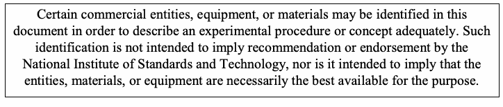

NIST SP 800-126 Rev. 1 日本語訳
英語タイトル : The Technical Specification for the Security Content Automation Protocol (SCAP): SCAP Version 1.1日本語タイトル : セキュリティコンテンツ自動化プロトコル（SCAP）の技術仕様：SCAPバージョン1.1
公開日 : 2011-02-25
原文URL : https://csrc.nist.gov/pubs/sp/800/126/r1/final
翻訳編集 : 自動生成（有志による非公式の日本語訳）, 原文取得日 : 2026-09-30, 訳文 : 494 / 494 ブロック
[要約] SP 800-126 Rev. 1 は、セキュリティコンテンツ自動化プロトコル（SCAP）バージョン1.1の正式な技術仕様を示す文書です。SCAPは、ソフトウェアの欠陥やセキュリティ構成に関する情報の形式と用語を標準化する仕様群で、本書は個別の構成要素仕様の要件を基に、複数の仕様の併用や個別の仕様のさらなる制約に関するSCAPコンテンツの作成と処理の要件を定めます。適用範囲はSCAPバージョン1.1に限られ、他のバージョンは本書の別の改訂版で定義されるとされています。
［NIST のロゴ。公的な標章のため、この非公式サイトには掲載していない。原本 PDF を参照。］
Special Publication 800-126 Revision 1
特別刊行物800-126 改訂第1版
The Technical Specification for the Security Content Automation Protocol (SCAP): SCAP Version 1.1
Security Content Automation Protocol（SCAP）の技術仕様: SCAPバージョン1.1
Recommendations of the National Institute of Standards and Technology
米国国立標準技術研究所の推奨事項
David Waltermire Stephen Quinn Karen Scarfone
David Waltermire、Stephen Quinn、Karen Scarfone
NIST Special Publication 800-126 Revision 1
NIST Special Publication 800-126 改訂第1版
The Technical Specification for the Security Content Automation Protocol (SCAP): SCAP Version 1.1
Security Content Automation Protocol（SCAP）の技術仕様: SCAPバージョン1.1
Recommendations of the National Institute of Standards and Technology
米国国立標準技術研究所による勧告
David Waltermire Stephen Quinn Karen Scarfone
David Waltermire Stephen Quinn Karen Scarfone
Computer Security Division Information Technology Laboratory National Institute of Standards and Technology Gaithersburg, MD 20899-8930
コンピュータセキュリティ部門 情報技術研究所 米国国立標準技術研究所 メリーランド州ゲイサーズバーグ 20899-8930
February 2011
2011年2月
U.S. Department of Commerce
米国商務省
Gary Locke, Secretary
商務長官 Gary Locke
National Institute of Standards and Technology
米国国立標準技術研究所
Dr. Patrick D. Gallagher, Director
所長 Dr. Patrick D. Gallagher
Reports on Computer Systems Technology
コンピューターシステム技術報告書
The Information Technology Laboratory (ITL) at the National Institute of Standards and Technology (NIST) promotes the U.S. economy and public welfare by providing technical leadership for the nation‘s measurement and standards infrastructure. ITL develops tests, test methods, reference data, proof of concept implementations, and technical analysis to advance the development and productive use of information technology. ITL‘s responsibilities include the development of technical, physical, administrative, and management standards and guidelines for the cost-effective security and privacy of sensitive unclassified information in Federal computer systems. This Special Publication 800-series reports on ITL‘s research, guidance, and outreach efforts in computer security and its collaborative activities with industry, government, and academic organizations.
国立標準技術研究所（NIST）の情報技術研究所（ITL）は、国の計測および標準インフラストラクチャに技術的リーダーシップを提供することで、米国経済と公共の福祉を促進している。ITLは、情報技術の発展と生産的利用を推進するため、試験、試験方法、参照データ、概念実証の実装、および技術分析を開発している。ITLの責務には、連邦コンピューターシステム内の機微な非機密情報について、費用対効果に優れたセキュリティとプライバシーを実現するための技術、物理、運営、および管理上の標準とガイドラインの策定が含まれる。この特別刊行物800シリーズは、コンピューターセキュリティに関するITLの研究、ガイダンス、普及活動、および産業界、政府、学術機関との協力活動を報告する。
National Institute of Standards and Technology Special Publication 800-126, Revision 1 39 pages (Feb. 2011)
米国国立標準技術研究所 Special Publication 800-126、改訂第1版 39ページ（2011年2月）
Certain commercial entities, equipment, or materials may be identified in this document in order to describe an experimental procedure or concept adequately. Such identification is not intended to imply recommendation or endorsement by the National Institute of Standards and Technology, nor is it intended to imply that the entities, materials, or equipment are necessarily the best available for the purpose.
原本PDFの抜粋画像

実験手順または概念を十分に説明するため、この文書では特定の商業団体、機器、または材料を明示する場合がある（may）。このような明示は、国立標準技術研究所による推奨または承認を意味するものではなく、また、明示された団体、材料、または機器が当該目的に利用可能な最善のものであることを意味するものでもない。
Acknowledgments
謝辞
The authors, David Waltermire and Stephen Quinn of the National Institute of Standards and Technology (NIST), and Karen Scarfone of G2, Inc., wish to thank their colleagues who reviewed drafts of this document and contributed to its technical content. The authors would like to acknowledge John Banghart, Harold Booth, Paul Cichonski, and Blair Heiserman of NIST; Christopher Johnson of HP Enterprise Services; Paul Bartock of the National Security Agency (NSA); Jeff Ito, Matt Kerr, Shane Shaffer, and Greg Witte of G2, Inc.; Andy Bove of SecureAcuity; Jim Ronayne of Varen Technologies; Adam Halbardier, Rhonda Farrell, Angela Orebaugh, and Victoria Thompson of Booz Allen Hamilton; Alan Peltzman of the Defense Information Systems Agency (DISA); and Jon Baker, Drew Buttner, Maria Casipe, and Charles Schmidt of the MITRE Corporation for their keen and insightful assistance throughout the development of the document.
著者である国立標準技術研究所（NIST）のDavid WaltermireおよびStephen Quinn、ならびにG2, Inc.のKaren Scarfoneは、本書の草案をレビューし、その技術内容に貢献した同僚に謝意を表す。著者は、本書の策定を通じて鋭く洞察に富む支援を寄せたNISTのJohn Banghart、Harold Booth、Paul Cichonski、Blair Heiserman、HP Enterprise ServicesのChristopher Johnson、米国国家安全保障局（NSA）のPaul Bartock、G2, Inc.のJeff Ito、Matt Kerr、Shane Shaffer、Greg Witte、SecureAcuityのAndy Bove、Varen TechnologiesのJim Ronayne、Booz Allen HamiltonのAdam Halbardier、Rhonda Farrell、Angela Orebaugh、Victoria Thompson、国防情報システム局（DISA）のAlan Peltzman、MITRE CorporationのJon Baker、Drew Buttner、Maria Casipe、Charles Schmidtにも謝意を表す。
Trademark Information
商標情報
OVAL and CVE are registered trademarks, and CCE, CPE, and OCIL are trademarks, of The MITRE Corporation.
OVALおよびCVEはThe MITRE Corporationの登録商標であり、CCE、CPE、およびOCILは同社の商標である。
XCCDF and SCAP are trademarks of NIST.
XCCDFおよびSCAPはNISTの商標である。
Windows XP, Windows Vista, and Windows Server 2003 are registered trademarks of Microsoft Corporation.
Windows XP、Windows Vista、およびWindows Server 2003はMicrosoft Corporationの登録商標である。
All other registered trademarks or trademarks belong to their respective organizations.
その他すべての登録商標または商標は、それぞれの組織に帰属する。
Table of Contents
目次
Executive Summary — 1
エグゼクティブサマリー — 1
1. Introduction — 3
1. はじめに — 3
1.1 Authority — 3
1.1 権限 — 3
1.2 Purpose and Scope — 3
1.2 目的と適用範囲 — 3
1.3 Audience — 4
1.3 対象読者 — 4
1.4 Document Structure — 4
1.4 文書の構成 — 4
1.5 Document Conventions — 4
1.5 文書の表記規則 — 4
2. SCAP 1.1 Conformance — 7
2. SCAP 1.1適合性 — 7
2.1 Product Conformance — 7
2.1 製品適合性 — 7
2.2 Organization Conformance — 8
2.2 組織適合性 — 8
3. SCAP Content Requirements and Recommendations — 9
3. SCAPコンテンツの要件および推奨事項 — 9
3.1 SCAP Source Data Streams — 9
3.1 SCAPソースデータストリーム — 9
3.2 eXtensible Configuration Checklist Description Format (XCCDF) — 10
3.2 eXtensible Configuration Checklist Description Format（XCCDF） — 10
3.2.1 General — 10
3.2.1 一般 — 10
3.2.2 The <xccdf:platform> Element and CPE Names — 11
3.2.2 <xccdf:platform>要素およびCPE名 — 11
3.2.3 The <xccdf:Benchmark> Element — 12
3.2.3 <xccdf:Benchmark>要素 — 12
3.2.4 The <xccdf:Profile> Element — 12
3.2.4 <xccdf:Profile>要素 — 12
3.2.5 Allowed Check System Usage — 13
3.2.5 許可されるチェックシステムの使用 — 13
3.2.6 The <xccdf:Rule> Element — 15
3.2.6 <xccdf:Rule>要素 — 15
3.3 Open Vulnerability and Assessment Language (OVAL) — 17
3.3 Open Vulnerability and Assessment Language（OVAL） — 17
3.4 Open Checklist Interactive Language (OCIL) — 19
3.4 Open Checklist Interactive Language（OCIL） — 19
3.5 Common Platform Enumeration (CPE) — 19
3.5 Common Platform Enumeration（CPE） — 19
3.6 Common Configuration Enumeration (CCE) — 20
3.6 Common Configuration Enumeration（CCE） — 20
3.7 Common Vulnerabilities and Exposures (CVE) — 20
3.7 Common Vulnerabilities and Exposures（CVE） — 20
3.8 Common Vulnerability Scoring System (CVSS) — 20
3.8 Common Vulnerability Scoring System（CVSS） — 20
4. SCAP Processing Requirements and Recommendations — 21
4. SCAP処理の要件および推奨事項 — 21
4.1 Legacy Support — 21
4.1 レガシーサポート — 21
4.2 SCAP Content Validation — 21
4.2 SCAPコンテンツ検証 — 21
4.3 The <xccdf:Profile> Element — 21
4.3 <xccdf:Profile>要素 — 21
4.4 CPE Applicability Processing — 21
4.4 CPE適用性処理 — 21
4.5 Check System Usage — 22
4.5 チェックシステムの使用 — 22
4.6 SCAP Result Data Streams — 23
4.6 SCAP結果データストリーム — 23
4.7 XCCDF Results — 23
4.7 XCCDF結果 — 23
4.7.1 Assigning CVE Identifiers to Rule Results — 25
4.7.1 ルール結果へのCVE識別子の割り当て — 25
4.7.2 Assigning CCE Identifiers to Rule Results — 25
4.7.2 ルール結果へのCCE識別子の割り当て — 25
4.7.3 Mapping OVAL Results to XCCDF Results — 26
4.7.3 OVAL結果からXCCDF結果へのマッピング — 26
4.8 OVAL Results — 26
4.8 OVAL結果 — 26
4.9 OCIL Results — 28
4.9 OCIL結果 — 28
5. Data Stream Content Types — 29
5. データストリームのコンテンツタイプ — 29
5.1 Compliance Checking — 29
5.1 適合性確認 — 29
5.2 Vulnerability Scanning — 30
5.2 脆弱性スキャン — 30
5.3 Inventory Scanning — 30
5.3 インベントリースキャン — 30
5.4 OVAL-Only Scanning — 31
5.4 OVALのみのスキャン — 31
Appendix A— Acronyms and Abbreviations............................................................................A-1
付録A— 略語および省略語............................................................................A-1
Appendix B— Normative References......................................................................................B-1
付録B— 規範的参考文献......................................................................................B-1
List of Tables and Figures
表および図の一覧
Table 1. Conventional XML Mappings — 5
表1. 従来型XMLマッピング — 5
Table 2. SCAP Source Data Stream Conventions — 9
表2. SCAPソースデータストリームの規約 — 9
Table 3. Use of Dublin Core Terms in XCCDF Metadata — 12
表3. XCCDFメタデータにおけるDublin Core用語の使用 — 12
Table 4. XCCDF-OVAL Data Export Matching Constraints — 15
表4. XCCDF-OVALデータエクスポートの照合制約 — 15
Table 5. SCAP Result Data Stream Naming Conventions — 23
表5. SCAP結果データストリームの命名規約 — 23
Table 6. XCCDF Fact Descriptions — 24
表6. XCCDFファクトの説明 — 24
Table 7. Deriving XCCDF Rule Results from OVAL Definition Results — 26
表7. OVAL定義結果からXCCDFルール結果を導出する方法 — 26
Executive Summary
エグゼクティブサマリー
The Security Content Automation Protocol (SCAP) is a suite of specifications that standardize the format and nomenclature by which security software products communicate security content, particularly software flaw and security configuration information1. SCAP is a multi-purpose protocol that supports automated configuration, vulnerability, and patch checking, technical control compliance activities, and security measurement. Goals for the development of SCAP include standardizing system security management, promoting interoperability of security products, and fostering the use of standard expressions of security content.
Security Content Automation Protocol（SCAP）は、セキュリティソフトウェア製品がセキュリティコンテンツ、特にソフトウェアの欠陥およびセキュリティ構成情報1をやり取りする際の形式と用語を標準化する一連の仕様である。SCAPは、構成、脆弱性、パッチの自動チェック、技術的管理策への適合活動、およびセキュリティ測定を支援する多目的プロトコルである。SCAP開発の目標には、システムセキュリティ管理の標準化、セキュリティ製品の相互運用性の促進、ならびにセキュリティコンテンツの標準的な表現の利用推進が含まれる。
SCAP Version 1.1 is comprised of seven specifications—eXtensible Configuration Checklist Description Format (XCCDF), Open Vulnerability and Assessment Language (OVAL®), Open Checklist Interactive Language (OCIL), Common Platform Enumeration (CPE™), Common Configuration Enumeration (CCE™), Common Vulnerabilities and Exposures (CVE®), and Common Vulnerability Scoring System (CVSS). These specifications are grouped into three categories:
SCAPバージョン1.1は、7つの仕様、すなわちeXtensible Configuration Checklist Description Format（XCCDF）、Open Vulnerability and Assessment Language（OVAL®）、Open Checklist Interactive Language（OCIL）、Common Platform Enumeration（CPE™）、Common Configuration Enumeration（CCE™）、Common Vulnerabilities and Exposures（CVE®）、およびCommon Vulnerability Scoring System（CVSS）で構成される。これらの仕様は次の3つのカテゴリに分類される。
•Languages. The SCAP languages provide standard vocabularies and conventions for expressing security policy, technical check mechanisms, and assessment results.
•言語。SCAP言語は、セキュリティポリシー、技術的なチェック機構、および評価結果を表現するための標準的な語彙と規約を提供する。
•Enumerations. Each SCAP enumeration defines a standard nomenclature (naming format) and an official dictionary or list of items expressed using that nomenclature. For example, CVE provides a dictionary of publicly known information security vulnerabilities and exposures.2
•列挙体系。各SCAP列挙体系は、標準的な命名法（命名形式）と、その命名法を用いて表現される項目の公式な辞書または一覧を定義する。例えば、CVEは公知の情報セキュリティ上の脆弱性および露出に関する辞書を提供する。2
•Measurement and scoring systems. In SCAP this refers to evaluating specific characteristics of a vulnerability and, based on those characteristics, generating a score that reflects the vulnerability‘s severity.
•測定およびスコアリングシステム。SCAPでは、脆弱性の特性を評価し、その特性に基づいて脆弱性の深刻度を反映するスコアを生成することを指す。
SCAP utilizes software flaw and security configuration standard reference data. This reference data is provided by the National Vulnerability Database (NVD),3 which is managed by NIST and sponsored by the Department of Homeland Security (DHS).
SCAPは、ソフトウェアの欠陥およびセキュリティ構成に関する標準参照データを利用する。この参照データはNational Vulnerability Database（NVD）3が提供する。NVDはNISTが管理し、国土安全保障省（DHS）が後援している。
This publication defines the technical composition of SCAP Version 1.1 in terms of its component specifications, their interrelationships, and the requirements for SCAP content, and also describes details of how the component specifications of SCAP interoperate. The technical specification for SCAP in this publication describes the requirements and conventions that are to be employed to ensure the consistent and accurate exchange of SCAP content and the ability to reliably use the content with SCAP validated products.
本刊行物は、構成仕様、それらの相互関係、およびSCAPコンテンツの要件の観点からSCAPバージョン1.1の技術的構成を定義するとともに、SCAPの構成仕様がどのように相互運用するかについて詳しく説明する。本刊行物におけるSCAPの技術仕様は、SCAPコンテンツを一貫性をもって正確に交換でき、SCAP検証済み製品でそのコンテンツを確実に利用できるようにするために用いる要件および規約を記述する。
The U.S. Federal Government, in cooperation with academia and private industry, is adopting SCAP and encourages its use in support of security automation activities and initiatives.4 SCAP has achieved widespread adoption by major software and hardware manufacturers and has become a significant component of large information security management and governance programs. The protocol is expected to evolve and expand in support of the growing needs to define and measure effective security controls, assess and monitor ongoing aspects of that information security, and successfully manage systems in accordance with risk management frameworks such as NIST Special Publication 800-535, Department of Defense (DoD) Instruction 8500.2, and the Payment Card Industry (PCI) framework.
米国連邦政府は、学界および民間産業界と協力してSCAPを採用し、セキュリティ自動化の活動および取り組みを支援するためにその利用を推奨している。4 SCAPは主要なソフトウェアおよびハードウェア製造業者に広く採用され、大規模な情報セキュリティ管理・ガバナンスプログラムの重要な構成要素となっている。このプロトコルは、効果的なセキュリティ管理策を定義および測定し、情報セキュリティの継続的な側面を評価および監視し、NIST Special Publication 800-53⁵、国防総省（DoD）Instruction 8500.2、およびPayment Card Industry（PCI）フレームワークなどのリスク管理フレームワークに従ってシステムを適切に管理するという、増大するニーズを支えるために進化・拡張することが期待されている。
By detailing the specific and appropriate usage of the SCAP 1.1 components and their interoperability, NIST encourages the creation of reliable and pervasive SCAP content and the development of a wide array of products that leverage SCAP capabilities.
SCAP 1.1の各構成要素の具体的かつ適切な使用方法と相互運用性を詳述することで、NISTは、信頼性が高く広く利用できるSCAPコンテンツの作成と、SCAPの機能を活用する幅広い製品の開発を推奨している。
Organizations that develop SCAP 1.1-based content or products should implement the following recommendations:
SCAP 1.1ベースのコンテンツまたは製品を開発する組織は、次の推奨事項を実施するべきである（should）。
Follow the requirements listed in this document and in the associated component specifications.
本書および関連する構成要素仕様に記載された要件に従うこと。
Organizations should ensure that their implementation and use of SCAP 1.1 is compliant with the requirements detailed in each component specification and the information presented in this document.
組織は、SCAP 1.1の実装および使用が、各構成要素仕様に記載された要件と本書に示された情報に準拠することを確実にするべきである（should）。
If requirements are in conflict between component specifications, this document will provide clarification. If a component specification is in conflict with this document, the requirements in this document take precedence.
構成要素仕様間で要件が矛盾する場合、本書が明確化を示す（will）。構成要素仕様が本書と矛盾する場合は、本書の要件が優先される。
When creating SCAP content, adhere to the conventions specified in this document.
SCAPコンテンツを作成する際は、本書に規定された規約を順守すること。
Security products and checklist authors assemble content from SCAP data repositories to create viable SCAP-expressed security guidance. A security configuration checklist that documents desired security configuration settings, installed patches, and other system security elements using a standardized SCAP format is known as an SCAP-expressed checklist. Such a checklist would use XCCDF to describe the checklist, CCE to identify security configuration settings to be addressed or assessed, and CPE to identify platforms for which the checklist is valid. The use of CCE and CPE entries within XCCDF checklists is an example of an SCAP convention—a requirement for valid SCAP usage. These conventions are considered part of the definition of SCAP 1.1. Organizations producing SCAP content should adhere to these conventions to ensure the highest degree of interoperability. NIST provides an SCAP Content Validation Tool that organizations can use to help validate the correctness of their SCAP content. The tool checks that SCAP content is well-formed, all cross references are valid, and required values are appropriately set.
セキュリティ製品およびチェックリストの作成者は、SCAPデータリポジトリからコンテンツを組み立て、実用的なSCAP表現のセキュリティガイダンスを作成する。標準化されたSCAP形式を用いて、望ましいセキュリティ構成設定、インストール済みパッチ、その他のシステムセキュリティ要素を記録したセキュリティ構成チェックリストは、SCAP表現チェックリストと呼ばれる。このようなチェックリストでは、XCCDFを用いてチェックリストを記述し、CCEを用いて対処または評価するセキュリティ構成設定を識別し、CPEを用いてチェックリストが有効なプラットフォームを識別する。XCCDFチェックリスト内でCCEおよびCPEのエントリーを使用することは、SCAP規約（SCAP convention）、すなわち有効なSCAP使用の要件の一例である。これらの規約はSCAP 1.1の定義の一部とみなされる。SCAPコンテンツを作成する組織は、最高度の相互運用性を確保するため、これらの規約に従うべきである。NISTは、組織がSCAPコンテンツの正確性の検証を支援するために使用できるSCAP Content Validation Toolを提供している。このツールは、SCAPコンテンツが整形式であること、すべての相互参照が有効であること、必須値が適切に設定されていることを確認する。
1. Introduction
1. はじめに
1.1 Authority
1.1 権限
The National Institute of Standards and Technology (NIST) developed this document in furtherance of its statutory responsibilities under the Federal Information Security Management Act (FISMA) of 2002, Public Law 107-347.
国立標準技術研究所（NIST）は、2002年連邦情報セキュリティ管理法（FISMA）、公法107-347に基づく法定責任を遂行するため、本書を策定した。
NIST is responsible for developing standards and guidelines, including minimum requirements, for providing adequate information security for all agency operations and assets; but such standards and guidelines shall not apply to national security systems. This guideline is consistent with the requirements of the Office of Management and Budget (OMB) Circular A-130, Section 8b(3), “Securing Agency Information Systems,” as analyzed in A-130, Appendix IV: Analysis of Key Sections. Supplemental information is provided in A-130, Appendix III.
NISTは、すべての機関の業務および資産に適切な情報セキュリティを提供するため、最低要件を含む標準およびガイドラインの策定に責任を負う。ただし、当該標準およびガイドラインは国家安全保障システムには適用されない。本ガイドラインは、行政管理予算局（OMB）通達A-130第8b(3)節「機関情報システムの保護」の要件に準拠しており、その分析はA-130付録IV「主要節の分析」に記載されている。補足情報はA-130付録IIIに記載されている。
This guideline has been prepared for use by Federal agencies. It may be used by nongovernmental organizations on a voluntary basis and is not subject to copyright, though attribution is desired.
本ガイドラインは連邦機関で使用するために作成された。非政府組織も任意で使用してよく（may）、著作権の対象ではないが、出典表示が望まれる。
Nothing in this document should be taken to contradict standards and guidelines made mandatory and binding on Federal agencies by the Secretary of Commerce under statutory authority, nor should these guidelines be interpreted as altering or superseding the existing authorities of the Secretary of Commerce, Director of the OMB, or any other Federal official.
本書のいかなる記述も、法定権限に基づいて商務長官が連邦機関に義務付け、拘束力を持たせた標準およびガイドラインに反するものと解釈すべきではない。また、これらのガイドラインは、商務長官、OMB長官、またはその他の連邦当局者が有する既存の権限を変更または置き換えるものと解釈すべきではない。
1.2 Purpose and Scope
1.2 目的と適用範囲
This document provides the definitive technical specification for Version 1.1 of the Security Content Automation Protocol (SCAP). SCAP (pronounced ess-cap) consists of a suite of specifications for standardizing the format and nomenclature by which security software communicates information about software flaws and security configurations. This document defines requirements for creating and processing SCAP content. These requirements build on the requirements defined within the individual SCAP component specifications. Each new requirement pertains either to using multiple component specifications together or to further constraining one of the individual component specifications. The requirements within the individual component specifications are not repeated in this document; see those specifications to access their requirements.
本書は、Security Content Automation Protocol（SCAP）バージョン1.1の正式な技術仕様を示す。SCAP（「エスキャップ」と発音）は、セキュリティソフトウェアがソフトウェアの欠陥およびセキュリティ構成に関する情報を伝達する際の形式と用語を標準化する一連の仕様で構成される。本書は、SCAPコンテンツを作成および処理するための要件を定義する。これらの要件は、個々のSCAP構成要素仕様で定義された要件に基づいている。各新規要件は、複数の構成要素仕様を組み合わせて使用すること、または個々の構成要素仕様のいずれかをさらに制約することのいずれかに関するものである。個々の構成要素仕様内の要件は本書では繰り返さない。それらの要件については各仕様を参照すること。
The scope of this document is limited to SCAP Version 1.1. Other versions of SCAP and its component specifications, including emerging specifications, are not addressed here. Future versions of SCAP will be defined in distinct revisions of this document, each clearly labeled with a document revision number and the appropriate SCAP version number. SCAP revisions are managed through a coordinated process defined within the SCAP Release Cycle.6 The release cycle workflow manages changes related to SCAP specifications and validation processes including the addition of new specifications or updates to existing specifications. This process encourages community involvement, promotes transparency and awareness regarding proposed changes, and affords ample lead-time to prepare for pending changes.
本書の適用範囲はSCAPバージョン1.1に限定される。新興仕様を含むその他のバージョンのSCAPおよびその構成要素仕様は、本書では扱わない。SCAPの将来のバージョンは、本書の個別の改訂版で定義される。それぞれ文書改訂番号と該当するSCAPバージョン番号が明記される。SCAPの改訂は、SCAP Release Cycleで定義された調整プロセスを通じて管理される。6このリリースサイクルのワークフローでは、新たな仕様の追加や既存仕様の更新を含む、SCAP仕様および検証プロセスに関連する変更を管理する。このプロセスは、コミュニティの参加を促し、提案された変更に関する透明性と認識を高め、予定される変更への準備に十分なリードタイムを確保する。
1.3 Audience
1.3 対象読者
This document is intended for three primary audiences:
本書は、主に次の3つの対象読者を想定している。
•Content authors and editors seeking guidance to ensure that the SCAP content they produce operates correctly, consistently, and reliably in SCAP products.
•自ら作成するSCAPコンテンツがSCAP製品上で正しく、一貫して、確実に動作するよう指針を求めるコンテンツ作成者および編集者。
•Software developers and system integrators seeking to create, use, or exchange SCAP content in their products or service offerings.
•自社製品またはサービス提供においてSCAPコンテンツを作成、使用、または交換しようとするソフトウェア開発者およびシステムインテグレーター。
•Product developers preparing for SCAP validation at an accredited independent testing laboratory.
•認定された独立試験機関でのSCAP検証に備える製品開発者。
This document assumes that readers already have general knowledge of SCAP and reasonable familiarity with the SCAP component specifications that their content, products, or services use. Individuals without this level of knowledge who would like to learn more about SCAP should consult NIST Special Publication (SP) 800-117, Guide to Adopting and Using the Security Content Automation Protocol.7
本書では、読者がSCAPに関する一般知識をすでに有し、自らのコンテンツ、製品、またはサービスで使用するSCAP構成要素仕様に十分精通していることを前提とする。この水準の知識を持たず、SCAPについてさらに学びたいと考える人は、NIST Special Publication（SP）800-117「Security Content Automation Protocolの採用および使用に関するガイド」を参照すべきである。7
1.4 Document Structure
1.4 文書の構成
The remainder of this document is organized into the following major sections and appendices:
本書の残りの部分は、次の主要な節および付録で構成される。
•Section 2 provides the high-level requirements for claiming conformance with the SCAP 1.1 specification.
•第2節では、SCAP 1.1仕様への適合を主張するための高レベルの要件を示す。
•Section 3 details the requirements and recommendations for SCAP content syntax, structures, and development.
•第3節では、SCAPコンテンツの構文、構造、および開発に関する要件と推奨事項を詳述する。
•Section 4 defines SCAP content processing requirements and recommendations.
•第4節では、SCAPコンテンツ処理の要件および推奨事項を定義する。
•Section 5 provides additional requirements for selected common types of SCAP content.
•第5節では、SCAPコンテンツの代表的な種類について追加要件を示す。
•Appendix A contains an acronym and abbreviation list.
•付録Aには、頭字語および略語の一覧を収録している。
•Appendix B lists references and other resources related to SCAP 1.1.
•付録Bには、SCAP 1.1に関連する参考文献およびその他のリソースを記載している。
1.5 Document Conventions
1.5 文書の表記規則
Some of the requirements and conventions used in this document reference eXtensible Markup Language (XML) content. These references come in two forms, inline and indented. An example of an inline reference is A <cpe_dict:cpe-item> may contain <cpe_dict:check> elements that reference OVAL Definitions. In this example the notation <cpe_dict:cpe-item> can be replaced by the more verbose equivalent “the XML element whose qualified name is cpe_dict:cpe-item”. An even more verbose equivalent is “the XML element in the namespace ‘http://cpe.mitre.org/dictionary/2.0‘ whose local name is cpe-item”.
本書で使用する要件および規約の一部は、eXtensible Markup Language（XML）コンテンツを参照している。これらの参照形式には、インライン形式と字下げ形式がある。インライン参照の例は、「<cpe_dict:cpe-item>は、OVAL定義を参照する<cpe_dict:check>要素を含む場合がある」である。この例では、表記<cpe_dict:cpe-item>を、より詳しく「修飾名がcpe_dict:cpe-itemであるXML要素」と置き換えることができる。さらに詳しくは、「名前空間が‘http://cpe.mitre.org/dictionary/2.0‘であり、ローカル名がcpe-itemであるXML要素」と表現できる。
An example of an indented reference is:
字下げ参照の例を次に示す。
References to OVAL Definitions are expressed using the following format: <cpe_dict:check system= "http://oval.mitre.org/XMLSchema/oval-definitions-5" href="Oval_URL">[Oval_inventory_definition_id] </cpe_dict:check>.
OVAL定義への参照は、次の形式で表される: <cpe_dict:check system= "http://oval.mitre.org/XMLSchema/oval-definitions-5" href="Oval_URL">[Oval_inventory_definition_id] </cpe_dict:check>。
The general convention used when describing XML attributes within this document is to reference the attribute as well as its associated element including the namespace alias, employing the general form "@attributeName for the <prefix:localName>".
本書でXML属性を記述する際の一般的な規約は、名前空間別名を含む関連要素とともに属性を参照することであり、一般形式"@attributeName for the <prefix:localName>"を用いる。
Indented references are intended to represent the form of actual XML content. Indented references represent literal content by the use of a fixed-length font, and parametric (freely replaceable) content by the use of an italic font. Square brackets ‘[]‘ are used to designate optional content. Thus "[Oval_inventory_definition_id]" designates optional parametric content.
字下げ参照は、実際のXMLコンテンツの形式を表すものである。字下げ参照では、リテラルコンテンツを固定幅フォントで、パラメーター化された（自由に置き換え可能な）コンテンツをイタリック体で表す。角括弧‘[]‘は任意（optional）のコンテンツを示す。したがって、"[Oval_inventory_definition_id]"は任意（optional）のパラメーター化コンテンツを示す。
Both inline and indented forms use qualified names to refer to specific XML elements. A qualified name associates a named element with a namespace. The namespace identifies the specific XML schema that defines (and consequently may be used to validate) the syntax of the element instance. A qualified name declares this schema to element association using the format ‘prefix:element-name‘. The association of prefix to namespace is defined in the metadata of an XML document and generally will vary from document to document. In this specification, the conventional mappings listed in Table 1 are used. The namespace URIs in the table are not required to be resolvable; if you enter them into a web browser, for example, they may or may not work.8
インライン形式と字下げ形式のどちらも、特定のXML要素を参照するために修飾名を使用する。修飾名は、名前付き要素を名前空間に関連付ける。名前空間は、要素インスタンスの構文を定義する（したがって、その構文の検証に使用される場合がある）特定のXMLスキーマを識別する。修飾名は、「prefix:element-name」という形式を用いて、このスキーマと要素の関連付けを宣言する。接頭辞と名前空間の対応付けはXML文書のメタデータで定義され、通常は文書ごとに異なる。本仕様では、表1に示す標準的な対応付けを使用する。表中の名前空間URIは、解決可能である必要はない。例えば、ウェブブラウザーに入力しても、機能する場合としない場合がある。8
Table 1. Conventional XML Mappings
表1. 標準的なXMLマッピング
| Prefix | Namespace URI | Schema |
|---|---|---|
| cpe | http:/ | Embedded CPE references |
| cpe_dict | http:/ | CPE Dictionaries |
| cve | http:/ | NVD/CVE data feed elements and attributes |
| cvss | http:/ | NVD/CVSS data feed elements and attributes |
| dc | http:/ | Simple Dublin Core elements |
| ds | http:/ | Interoperable XML digital signatures |
| nvd | http:/ | Base schema for NVD data feeds |
| ocil | http:/ | OCIL elements and attributes |
| oval | http:/ | Common OVAL elements and attributes |
| oval-def | http:/ | OVAL Definitions |
| oval-res | http:/ | OVAL results |
| oval-sc | http:/ | OVAL system characteristics |
| 接頭辞 | 名前空間URI | スキーマ |
|---|---|---|
| cpe | http:/ | 埋め込みCPE参照 |
| cpe_dict | http:/ | CPE辞書 |
| cve | http:/ | NVD/CVEデータフィードの要素および属性 |
| cvss | http:/ | NVD/CVSSデータフィードの要素および属性 |
| dc | http:/ | Dublin Core基本要素 |
| ds | http:/ | 相互運用可能なXMLデジタル署名 |
| nvd | http:/ | NVDデータフィードの基本スキーマ |
| ocil | http:/ | OCILの要素および属性 |
| oval | http:/ | OVAL共通の要素および属性 |
| oval-def | http:/ | OVAL定義 |
| oval-res | http:/ | OVAL結果 |
| oval-sc | http:/ | OVALシステム特性 |
| Prefix | Namespace URI | Schema |
|---|---|---|
| oval-var | http:/ | The elements, types, and attributes that compose the core schema for encoding OVAL Variables. This schema is provided to give structure to any external variables and their values that an OVAL Definition is expecting. |
| sch | http:/ | Schematron validation scripts |
| xccdf | http:/ | XCCDF policy documents |
| xml | http:/ | Common XML attributes |
| xxxx-def | http:/ | OVAL elements and attributes specific to an OS, Hardware, or Application type xxxx9 |
| xxxx-sc | http:/ | OVAL system characteristic elements and attributes specific to an OS, Hardware, or Application type xxxx |
| 接頭辞 | 名前空間URI | スキーマ |
|---|---|---|
| oval-var | http:/ | OVAL変数を符号化するコアスキーマを構成する要素、型、および属性。このスキーマは、OVAL定義が想定する外部変数とその値に構造を与えるために提供される。 |
| sch | http:/ | Schematron検証スクリプト |
| xccdf | http:/ | XCCDFポリシー文書 |
| xml | http:/ | 共通XML属性 |
| xxxx-def | http:/ | OS、ハードウェア、またはアプリケーションの種類xxxx⁹に固有のOVAL要素および属性 |
| xxxx-sc | http:/ | OS、ハードウェア、またはアプリケーションの種類xxxxに固有のOVALシステム特性要素および属性 |
The key words “MUST”, “MUST NOT”, “REQUIRED”, “SHALL”, “SHALL NOT”, “SHOULD”, “SHOULD NOT”, “RECOMMENDED”, “MAY”, and “OPTIONAL” in this document are to be interpreted as described in Request for Comment (RFC) 2119.10
本書における「MUST」、「MUST NOT」、「REQUIRED」、「SHALL」、「SHALL NOT」、「SHOULD」、「SHOULD NOT」、「RECOMMENDED」、「MAY」、および「OPTIONAL」は、Request for Comments（RFC）2119に記載された意味で解釈する。10
2. SCAP 1.1 Conformance
2. SCAP 1.1適合性
SCAP 1.1 uses the following specifications:
SCAP 1.1は、次の仕様を使用する。
•Extensible Configuration Checklist Description Format (XCCDF) 1.1.4, a language for authoring security checklists/benchmarks and for reporting results of checklist evaluation [XCCDF]
•Extensible Configuration Checklist Description Format（XCCDF）1.1.4。セキュリティチェックリスト／ベンチマークの作成と、チェックリスト評価結果の報告に用いる言語。[XCCDF]
•Open Vulnerability and Assessment Language (OVAL) 5.8, a language for representing system configuration information, assessing machine state, and reporting assessment results [OVAL]
•Open Vulnerability and Assessment Language（OVAL）5.8。システム構成情報の表現、マシン状態の評価、および評価結果の報告に用いる言語。[OVAL]
•Open Checklist Interactive Language (OCIL) 2.0, a language for representing checks that collect information from people or from existing data stores made by other data collection efforts [OCIL]
•Open Checklist Interactive Language（OCIL）2.0。人または他のデータ収集活動が作成した既存データストアから情報を収集するチェックを表現する言語。[OCIL]
•Common Platform Enumeration (CPE) 2.2, a nomenclature and dictionary of hardware, operating systems, and applications [CPE]
•Common Platform Enumeration（CPE）2.2。ハードウェア、オペレーティングシステム、およびアプリケーションの命名法と辞書。[CPE]
•Common Configuration Enumeration (CCE) 5, a nomenclature and dictionary of software security configurations [CCE]
•Common Configuration Enumeration（CCE）5。ソフトウェアセキュリティ構成の命名法と辞書。[CCE]
•Common Vulnerabilities and Exposures (CVE), a nomenclature and dictionary of security-related software flaws11 [CVE]
•Common Vulnerabilities and Exposures（CVE）。セキュリティに関連するソフトウェアの欠陥の命名法と辞書11。[CVE]
•Common Vulnerability Scoring System (CVSS) 2.0, a specification for measuring the relative severity of software flaw vulnerabilities [CVSS].
•Common Vulnerability Scoring System（CVSS）2.0。ソフトウェア欠陥の脆弱性の相対的な深刻度を測定する仕様。[CVSS]
All references to these specifications within this document are to the version numbers listed above, unless otherwise explicitly specified.
本書内でこれらの仕様を参照する場合は、別途明記されていない限り、上記のバージョン番号を指す。
Combinations of these specifications can be used together for particular functions, such as security configuration scanning. These functions, known as SCAP capabilities, are not product types, but rather ways in which a product can use SCAP. The collective XML content used for a capability is called an SCAP data stream, which is a specific instantiation of SCAP content. An SCAP source data stream holds the input content, and an SCAP result data stream holds the output content. The major elements of a data stream, such as the XCCDF portion or the OVAL patch portion, are referred to as stream components.
これらの仕様を組み合わせて、セキュリティ構成スキャンなど特定の機能に使用できる。SCAP機能と呼ばれるこれらの機能は製品の種類ではなく、製品がSCAPをどのように使用できるかを指す。機能に用いるXMLコンテンツ全体をSCAPデータストリームと呼び、これはSCAPコンテンツを具体的に実装したものである。SCAPソースデータストリームは入力コンテンツを保持し、SCAP結果データストリームは出力コンテンツを保持する。XCCDF部分やOVALパッチ部分など、データストリームの主要要素はストリームコンポーネントと呼ばれる。
Products and organizations may want to claim conformance to one or more of the SCAP capabilities within the SCAP 1.1 specification for a variety of reasons. For example, a product may want to assert that it uses SCAP content properly and can interoperate with other products using valid SCAP content. Another example is a policy mandating that an organization use SCAP for performing vulnerability assessments and other security operations.
製品や組織は、さまざまな理由から、SCAP 1.1仕様に含まれる1つ以上のSCAP機能への適合を主張したい場合がある。例えば、製品は、SCAPコンテンツを適切に使用し、有効なSCAPコンテンツを用いる他の製品と相互運用できることを主張したい場合がある。別の例として、脆弱性評価やその他のセキュリティ運用にSCAPを使用するよう組織に義務付ける方針がある。
This section provides the high-level requirements that a product or SCAP content must meet for conformance with the SCAP 1.1 specification. Most of the requirements listed in this section reference other sections in the document that fully define the requirements.
本節では、製品またはSCAPコンテンツがSCAP 1.1仕様に適合するために満たさなければならない高レベルの要件を示す。本節の要件の大半は、要件を詳しく定義する本書の他の節を参照している。
2.1 Product Conformance
2.1 製品適合性
All IT products claiming conformance with the SCAP 1.1 specification SHALL adhere to the following requirements:
SCAP 1.1仕様への適合を主張するすべてのIT製品は、次の要件に従わなければならない（SHALL）。
1.Adhere to the requirements detailed in each applicable component specification (for each selected SCAP component specification, and for each SCAP component specification required to implement the selected SCAP capabilities). The authoritative references for each specification are listed in Appendix B. If requirements are in conflict between component specifications, this document will provide clarification. If a component specification is in conflict with this document, the requirements in this document SHALL take precedence.
1.適用される各構成要素仕様（選択したSCAP構成要素仕様ごと、および選択したSCAP機能の実装に必要なSCAP構成要素仕様ごと）に詳述された要件に従うこと。各仕様の正式な参照先は付録Bに記載されている。構成要素仕様間で要件が矛盾する場合は、本書が明確化を示す。構成要素仕様が本書と矛盾する場合は、本書の要件が優先されなければならない（SHALL）。
2.Products that process SCAP data streams SHALL consume and correctly process well-formed SCAP data streams. This includes following all of the processing requirements defined in Section 4 for each selected SCAP component specification and for each SCAP component specification required to implement the selected SCAP capabilities.
2.SCAPデータストリームを処理する製品は、整形式のSCAPデータストリームを受け取り、正しく処理しなければならない（SHALL）。これには、選択した各SCAP構成要素仕様および選択したSCAP機能の実装に必要な各SCAP構成要素仕様について、第4節で定義されたすべての処理要件に従うことが含まれる。
3.Products that produce SCAP data streams SHALL produce well-formed SCAP data streams. This includes following all of the syntax, structural, and other content design requirements defined in Section 3 for each selected SCAP component specification and for each SCAP component specification required to implement the selected SCAP capabilities. This also includes following the requirements in Section 5 if the content is one of the types addressed in that section.
3.SCAPデータストリームを生成する製品は、整形式のSCAPデータストリームを生成しなければならない（SHALL）。これには、選択した各SCAP構成要素仕様および選択したSCAP機能の実装に必要な各SCAP構成要素仕様について、第3節で定義された構文、構造、およびその他のコンテンツ設計要件に従うことが含まれる。さらに、コンテンツが第5節で扱う種類のいずれかである場合は、同節の要件に従うことも含まれる。
4.Make an explicit claim of conformance to this specification in any documentation provided to end users.
4.エンドユーザーに提供する文書において、本仕様への適合を明示的に主張すること。
2.2 Organization Conformance
2.2 組織適合性
Organizations creating or maintaining SCAP data streams that claim conformance with the SCAP 1.1 specification SHALL adhere to the following requirements:
SCAP 1.1仕様への適合を主張するSCAPデータストリームを作成または維持する組織は、次の要件に従わなければならない（SHALL）。
1.Adhere to the requirements detailed in each applicable component specification (for each selected SCAP component specification, and for each SCAP component specification required to implement the selected SCAP capabilities). The authoritative references for each specification are listed in Appendix B. If requirements are in conflict between component specifications, this document will provide clarification. If a component specification is in conflict with this document, the requirements in this document SHALL take precedence.
1.適用される各構成要素仕様（選択したSCAP構成要素仕様ごと、および選択したSCAP機能の実装に必要なSCAP構成要素仕様ごと）に詳述された要件に従うこと。各仕様の正式な参照先は付録Bに記載されている。構成要素仕様間で要件が矛盾する場合は、本書が明確化を示す。構成要素仕様が本書と矛盾する場合は、本書の要件が優先されなければならない（SHALL）。
2.Follow all of the syntax, structural, and other content design requirements defined in Section 3 for each selected SCAP component specification and for each SCAP component specification required to implement the selected SCAP capabilities. If the content is one of the types addressed in Section 5, follow all of its requirements as well.
2.選択した各SCAPコンポーネント仕様書、および選択したSCAP機能を実装するために必要な各SCAPコンポーネント仕様書について、第3節で定義する構文、構造、その他のコンテンツ設計要件すべてに従うこと。コンテンツが第5節で扱う種類のいずれかである場合は、その要件にもすべて従うこと。
3. SCAP Content Requirements and Recommendations
3. SCAPコンテンツの要件および推奨事項
This section defines the content syntax, structure, and development requirements that products and content authors and editors MUST follow to produce valid SCAP 1.1 content. This section also provides recommendations that are not mandatory; organizations are encouraged to adopt them to promote stronger interoperability and greater consistency. The first part of the section discusses SCAP source data stream requirements. The rest of the section groups requirements and recommendations by specification: XCCDF, OVAL, OCIL, CPE, CCE, CVE, and CVSS, in that order.
この節では、有効なSCAP 1.1コンテンツを作成するために、製品ならびにコンテンツの作成者および編集者が従わなければならない（MUST）コンテンツの構文、構造、開発要件を定義する。また、必須ではない推奨事項も示す。組織には、相互運用性の向上と一貫性の強化を促すため、これらの採用を推奨する。この節の前半ではSCAPソースデータストリームの要件を扱う。後半では、仕様ごとに要件と推奨事項をまとめ、XCCDF、OVAL、OCIL、CPE、CCE、CVE、CVSSの順に説明する。
3.1 SCAP Source Data Streams
3.1 SCAPソースデータストリーム
An SCAP data stream is a collection of XML instance documents, also called stream components. The required XML content composing an SCAP data stream depends on the use case and is designed to satisfy specific policy or situational awareness objectives. There are two types of SCAP data streams: source and result. Section 4.6 discusses SCAP result data streams, which contain the results that are generated during processing.
SCAPデータストリームは、ストリームコンポーネントとも呼ばれるXMLインスタンス文書の集合である。SCAPデータストリームを構成するために必要なXMLコンテンツは、ユースケースによって異なり、特定のポリシーまたは状況認識の目的を満たすように設計される。SCAPデータストリームにはソースと結果の2種類がある。第4.6節では、処理中に生成された結果を含むSCAP結果データストリームについて説明する。
An SCAP source data stream is the expression of content for a specific use case using one or more stream components. For its filenames, every SCAP source data stream SHALL use a common locator prefix that is appended to the URL base of the deployed data source. Every SCAP source data stream component SHALL have a filename comprised of the locator prefix (including a trailing hyphen) followed by the appropriate component suffix, as listed in Table 2.
SCAPソースデータストリームは、1つ以上のストリームコンポーネントを用いて特定のユースケース向けのコンテンツを表現したものである。ファイル名について、すべてのSCAPソースデータストリームは、配備されたデータソースのURLベースに付加する共通のロケータープレフィックスを使用しなければならない（SHALL）。すべてのSCAPソースデータストリームコンポーネントのファイル名は、ロケータープレフィックス（末尾のハイフンを含む）に、表2に示す適切なコンポーネント接尾辞を続けたものでなければならない（SHALL）。
Table 2. SCAP Source Data Stream Conventions
表2. SCAPソースデータストリームの規約
| Component | Component Suffix | Document Element |
|---|---|---|
| XCCDF Benchmark | xccdf.xml | <xccdf:Benchmark> |
| OVAL Compliance | oval.xml | <oval-def:oval |
| OVAL Patch | patches.xml | <oval-def:oval |
| OVAL Vulnerability | oval.xml | <oval-def:oval |
| OCIL Questionnaire | ocil.xml | <ocil:ocil> |
| CPE Dictionary | cpe-dictionary.xml | <cpe-dict:cpe-list> |
| CPE Inventory | cpe-oval.xml | <oval-def:oval |
| 構成要素 | 構成要素の接尾辞 | 文書要素 |
|---|---|---|
| XCCDFベンチマーク | xccdf.xml | <xccdf:Benchmark> |
| OVAL準拠性 | oval.xml | <oval-def:oval |
| OVALパッチ | patches.xml | <oval-def:oval |
| OVAL脆弱性 | oval.xml | <oval-def:oval |
| OCIL質問票 | ocil.xml | <ocil:ocil> |
| CPE辞書 | cpe-dictionary.xml | <cpe-dict:cpe-list> |
| CPEインベントリ | cpe-oval.xml | <oval-def:oval |
For example:
例：
file:///c:/content/example-winxp-xccdf.xml
file:///c:/content/example-winxp-xccdf.xml
The URL base is: file:///c:/content/ The locator prefix is: example-winxp- The stream component is: xccdf.xml
URLベース：file:///c:/content/ ロケータープレフィックス：example-winxp- ストリームコンポーネント：xccdf.xml
Table 2 also lists document elements. Each SCAP source data stream component SHALL use the specified element as its document element.
表2には文書要素も示す。各SCAPソースデータストリームコンポーネントは、指定された要素を文書要素として使用しなければならない（SHALL）。
Each SCAP source data stream component SHALL validate against the corresponding schema and, if applicable, associated Schematron stylesheet. Each SCAP source data stream component SHOULD NOT use any constructs that are deprecated in its associated specification. Validation of each component SHALL be done in accordance with the portions of this document that define requirements for the component. NIST provides an SCAP Content Validation Tool, which is designed to help validate the correctness of an SCAP source data stream.12 The SCAP Content Validation Tool is a simple command-line tool that will check that SCAP content is well-formed, all cross references are valid, and required values are appropriately set. All errors and warnings are returned in both XML and Hypertext Markup Language (HTML) formats.
各SCAPソースデータストリームコンポーネントは、対応するスキーマ、および該当する場合は関連するSchematronスタイルシートに対して検証しなければならない（SHALL）。各SCAPソースデータストリームコンポーネントは、関連仕様で非推奨となっている構文を使用すべきではない（SHOULD NOT）。各コンポーネントの検証は、そのコンポーネントの要件を定義する本書の該当箇所に従って行わなければならない（SHALL）。NISTは、SCAPソースデータストリームの正しさの検証を支援するSCAPコンテンツ検証ツールを提供している。12このSCAPコンテンツ検証ツールは簡易なコマンドラインツールであり、SCAPコンテンツの整形式性、すべての相互参照の有効性、必須値の適切な設定を確認する。すべてのエラーと警告は、XML形式およびハイパーテキストマークアップ言語（HTML）形式で返される。
3.2 eXtensible Configuration Checklist Description Format (XCCDF)
3.2 eXtensible Configuration Checklist Description Format（XCCDF）
This section lists the eXtensible Configuration Checklist Description Format (XCCDF) requirements and recommendations. They are organized by the following categories: general, <xccdf:platform>, <xccdf:Benchmark>, <xccdf:Profile>, <xccdf:Rule>, and check system usage.
この節では、eXtensible Configuration Checklist Description Format（XCCDF）の要件と推奨事項を列挙する。これらは、全般、<xccdf:platform>、<xccdf:Benchmark>、<xccdf:Profile>、<xccdf:Rule>、およびチェックシステムの使用というカテゴリに分けて整理されている。
3.2.1 General
3.2.1 全般
The following general restrictions apply to SCAP XCCDF content:
SCAP XCCDFコンテンツには、次の一般的な制約が適用される。
1.The use of the @xml:base attribute SHALL NOT be allowed. This attribute is not compatible with the SCAP data stream model.
1.@xml:base属性の使用を許可してはならない（SHALL NOT）。この属性はSCAPデータストリームモデルと互換性がない。
2.The <xccdf:Benchmark> element SHALL have an @xml:lang attribute.
2.<xccdf:Benchmark>要素は@xml:lang属性を持たなければならない（SHALL）。
3.If an @xml:lang attribute is omitted within the content model, the @xml:lang attribute of the nearest ancestor element that has the attribute defined SHALL be consulted. Possible ancestor elements are <xccdf:Value>, <xccdf:Group>, <xccdf:Rule>, and <xccdf:Benchmark>.
3.コンテンツモデル内で@xml:lang属性が省略されている場合、その属性が定義されている最も近い祖先要素の@xml:lang属性を参照しなければならない（SHALL）。祖先要素としては、<xccdf:Value>、<xccdf:Group>、<xccdf:Rule>、<xccdf:Benchmark>があり得る。
XCCDF metadata is used by SCAP products to assist in the selection of the appropriate SCAP data stream, ensure that the most recent or correct version of an XCCDF document is used, and provide additional information about the document. The following metadata requirements and conventions apply to the <xccdf:Benchmark>, <xccdf:Profile>, <xccdf:Value>, <xccdf:Group>, and <xccdf:Rule> elements:
XCCDFメタデータは、適切なSCAPデータストリームの選択を支援し、XCCDF文書の最新または正しいバージョンが使用されるようにし、文書に関する追加情報を提供するために、SCAP製品によって使用される。<xccdf:Benchmark>、<xccdf:Profile>、<xccdf:Value>、<xccdf:Group>、<xccdf:Rule>要素には、次のメタデータ要件および規約が適用される。
1.One or more instances of the <xccdf:title> element SHALL be provided. Each instance MUST contain a text value that indicates the purpose of the containing element and MAY include the OPTIONAL @xml:lang attribute. If more than one <xccdf:title> element is provided, the @xml:lang attribute SHALL be provided.
1.<xccdf:title>要素を1つ以上指定しなければならない（SHALL）。各要素には、包含要素の目的を示すテキスト値を含めなければならない（MUST）。また、OPTIONALである@xml:lang属性を含めてもよい（MAY）。<xccdf:title>要素を複数指定する場合、@xml:lang属性を指定しなければならない（SHALL）。
2.One or more instances of the <xccdf:description> element SHALL be provided. Each instance MUST contain text values that represent the purpose of the containing element and MAY include the OPTIONAL @xml:lang attribute. If more than one <xccdf:description> element is provided, the @xml:lang attribute SHALL be provided.
2.<xccdf:description>要素を1つ以上指定しなければならない（SHALL）。各要素には、包含要素の目的を表すテキスト値を含めなければならない（MUST）。また、OPTIONALである@xml:lang属性を含めてもよい（MAY）。<xccdf:description>要素を複数指定する場合、@xml:lang属性を指定しなければならない（SHALL）。
All remaining OPTIONAL elements in the XCCDF schema13 MAY be included at the author’s discretion unless otherwise noted in this document.
XCCDFスキーマ13にある残りのOPTIONAL要素は、本書で別途指示されていない限り、作成者の裁量で含めてもよい（MAY）。
3.2.2 The <xccdf:platform> Element and CPE Names
3.2.2 <xccdf:platform>要素およびCPE名
For all SCAP content, the applicability of <xccdf:Benchmark>, <xccdf:Profile>, <xccdf:Group>, and <xccdf:Rule> elements to specific IT platforms MAY be specified using one or more <xccdf:platform> @idref attributes. Each instance of the @idref attribute SHALL reference either a CPE Name or the @id attribute of a <cpe-lang:platform-specification/cpe-lang:platform> element.
すべてのSCAPコンテンツにおいて、特定のITプラットフォームへの<xccdf:Benchmark>、<xccdf:Profile>、<xccdf:Group>、<xccdf:Rule>要素の適用可能性は、1つ以上の<xccdf:platform> @idref属性を用いて指定してもよい（MAY）。各@idref属性の値は、CPE名、または<cpe-lang:platform-specification/cpe-lang:platform>要素の@id属性のいずれかを参照しなければならない（SHALL）。
If compound CPE Name statements are necessary, a CPE Language <cpe-lang:platform-specification> element SHALL be defined as a child of the <xccdf:Benchmark> element. The @id attribute for each <cpe-lang:platform> element declared in this manner MAY be referenced within an <xccdf:platform> element with a corresponding @idref attribute. Complex platforms MAY be referenced this way within <xccdf:Benchmark>, <xccdf:Profile>, <xccdf:Group>, and <xccdf:Rule> elements.
複合CPE名の文が必要な場合、CPE Languageの<cpe-lang:platform-specification>要素を<xccdf:Benchmark>要素の子として定義しなければならない（SHALL）。この方法で宣言された各<cpe-lang:platform>要素の@id属性は、対応する@idref属性を持つ<xccdf:platform>要素内で参照してもよい（MAY）。複雑なプラットフォームは、この方法で<xccdf:Benchmark>、<xccdf:Profile>、<xccdf:Group>、<xccdf:Rule>要素内から参照してもよい（MAY）。
For example:
例：
<cpe-lang:platform-specification> <cpe-lang:platform id="xp_and_acrobat_7.0.9"> <cpe-lang:logical-test operator="AND" negate="false"> <cpe-lang:fact-ref name="cpe:/o:microsoft:windows_xp"/> <cpe-lang:fact-ref name="cpe:/a:adobe:acrobat:7.0.9"/> </cpe-lang:logical-test> </cpe-lang:platform> </cpe-lang:platform-specification> <xccdf:platform idref="xp_and_acrobat_7.0.9"/>
<cpe-lang:platform-specification> <cpe-lang:platform id="xp_and_acrobat_7.0.9"> <cpe-lang:logical-test operator="AND" negate="false"> <cpe-lang:fact-ref name="cpe:/o:microsoft:windows_xp"/> <cpe-lang:fact-ref name="cpe:/a:adobe:acrobat:7.0.9"/> </cpe-lang:logical-test> </cpe-lang:platform> </cpe-lang:platform-specification> <xccdf:platform idref="xp_and_acrobat_7.0.9"/>
Within a given <xccdf:Benchmark>, <xccdf:Profile>, <xccdf:Group>, or <xccdf:Rule> context, if no <xccdf:platform> element is defined, the <xccdf:platform> of its nearest ancestor that has an <xccdf:platform> element defined SHALL be inherited. If none of its ancestors have an <xccdf:platform> element defined, the <xccdf:Benchmark>, <xccdf:Profile>, <xccdf:Group>, or <xccdf:Rule> SHALL be considered to apply to any product.
特定の<xccdf:Benchmark>、<xccdf:Profile>、<xccdf:Group>、または<xccdf:Rule>のコンテキスト内で<xccdf:platform>要素が定義されていない場合、その要素を持つ最も近い祖先の<xccdf:platform>を継承しなければならない（SHALL）。祖先に<xccdf:platform>要素が定義されていない場合、<xccdf:Benchmark>、<xccdf:Profile>、<xccdf:Group>、または<xccdf:Rule>は、あらゆる製品に適用されるものと見なさなければならない（SHALL）。
CPE Names used within an XCCDF document SHALL match the names of existing Official CPE Dictionary14 entries where names for the desired platform exist. The matching algorithm from [CPE] to be used SHALL be CPE_Name_Match for a single CPE Name and CPE_Language_Match for a compound CPE Name. If multiple matches are found within the dictionary (e.g., deprecated and current CPE Names), the most current CPE Name SHOULD be used.
XCCDF文書内で使用するCPE名は、目的のプラットフォーム名が存在する場合、Official CPE Dictionary14の既存エントリの名前と一致しなければならない（SHALL）。使用する[CPE]の照合アルゴリズムは、単一のCPE名にはCPE_Name_Match、複合CPE名にはCPE_Language_Matchでなければならない（SHALL）。辞書内で複数の一致（例：非推奨のCPE名と現行のCPE名）が見つかった場合、最も新しいCPE名を使用すべきである（SHOULD）。
Each reference to a CPE Name SHALL be declared in the required CPE dictionary data stream component, and each OVAL inventory class definition referenced from the dictionary data stream component SHALL be specified in the required CPE inventory data stream component.
CPE名への参照はそれぞれ、必須のCPE辞書データストリームコンポーネント内で宣言しなければならない（SHALL）。また、辞書データストリームコンポーネントから参照される各OVALインベントリクラス定義は、必須のCPEインベントリデータストリームコンポーネント内で指定しなければならない（SHALL）。
3.2.3 The <xccdf:Benchmark> Element
3.2.3 <xccdf:Benchmark>要素
The following requirements and recommendations apply to the <xccdf:Benchmark> element:
<xccdf:Benchmark>要素には、次の要件および推奨事項が適用される。
1.The REQUIRED @id attribute SHALL be used to uniquely identify all revisions of a benchmark. Multiple revisions of a single benchmark SHOULD have identical identifiers, so that someone who reviews the revisions can readily identify them as multiple versions of a single benchmark.
1.必須（REQUIRED）の@id属性は、ベンチマークのすべての改訂版を一意に識別するために使用しなければならない（SHALL）。単一のベンチマークの複数の改訂版は同一の識別子を持つべきである（SHOULD）。これにより、改訂版を確認する人が、それらを単一ベンチマークの複数バージョンとして容易に識別できる。
2.The @style attribute SHALL have the value “SCAP_1.1”.
2.@style属性の値は「SCAP_1.1」でなければならない（SHALL）。
3.The <xccdf:status> element SHALL indicate the current status of the benchmark document. The associated text value SHALL be “draft” for documents released in public draft state and “accepted” for documents that have been officially released by an organization. The @date attribute SHALL be populated with the date of the status change. Additional <xccdf:status> elements MAY be included to indicate historic status transitions.
3.<xccdf:status>要素は、ベンチマーク文書の現在の状態を示さなければならない（SHALL）。公開草案として公開された文書の関連テキスト値は「draft」、組織から正式に公開された文書の値は「accepted」でなければならない（SHALL）。@date属性には状態が変更された日付を設定しなければならない（SHALL）。過去の状態遷移を示すために、<xccdf:status>要素を追加してもよい（MAY）。
4.The <xccdf:version> element SHALL uniquely identify the particular revision of the benchmark. Also, these revisions SHOULD have version values that indicate the revision sequence, so that the history of changes from the original benchmark can be determined. The @time attribute of the <xccdf:version> element SHOULD be used for a timestamp of when the benchmark was defined. The @update attribute of the <xccdf:version> element SHOULD be used for a URI that specifies where updates to the benchmark can be obtained.
4.<xccdf:version>要素は、ベンチマークの特定の改訂版を一意に識別しなければならない（SHALL）。また、元のベンチマークからの変更履歴を判断できるよう、これらの改訂版では改訂の順序を示すバージョン値を付けるべきである（SHOULD）。<xccdf:version>要素の@time属性は、ベンチマークが定義された時点のタイムスタンプとして使用するべきである（SHOULD）。<xccdf:version>要素の@update属性は、ベンチマークの更新を取得できる場所を指定するURIとして使用するべきである（SHOULD）。
5.One or more instances of the <xccdf:notice> element MAY be provided indicating clarifications, suggestions, or warnings regarding the use of the benchmark, including but not limited to terms of use, legal notices, or copyright statements.
5.ベンチマークの使用に関する明確化、提案、警告（利用条件、法的通知、著作権表示などを含むがこれらに限らない）を示す<xccdf:notice>要素を1つ以上含めてもよい（MAY）。
6.The <xccdf:metadata> element SHALL be provided and SHALL, at minimum, contain the Dublin Core15 terms from Table 3. Additional Dublin Core terms SHALL follow the required terms within the element sequence.
6.<xccdf:metadata>要素を含めなければならず（SHALL）、最低限、表3のDublin Core15の用語を含めなければならない（SHALL）。追加のDublin Core用語は、要素の並び順で必須用語の後に続けなければならない（SHALL）。
Table 3. Use of Dublin Core Terms in XCCDF Metadata
表3. XCCDFメタデータにおけるDublin Core用語の使用
| Dublin Core Term | Description of Use |
|---|---|
| <dc:creator> | The person, organization, and/or service that created the XCCDF XML instance |
| <dc:publisher> | The person, organization, and/or service that published the XCCDF XML instance |
| <dc:contributor> | The person, organization, and/or service that contributed to the creation of the XCCDF XML instance |
| <dc:source> | An identifier that indicates the organizational context of the <xccdf:Benchmark> element’s @id attribute. An organizationally specific URI SHOULD be used. |
| Dublin Core用語 | 用途の説明 |
|---|---|
| <dc:creator> | XCCDF XMLインスタンスを作成した人物、組織、および／またはサービス |
| <dc:publisher> | XCCDF XMLインスタンスを公開した人物、組織、および／またはサービス |
| <dc:contributor> | XCCDF XMLインスタンスの作成に寄与した人物、組織、および／またはサービス |
| <dc:source> | <xccdf:Benchmark>要素の@id属性の組織上の文脈を示す識別子。組織固有のURIを使用すべきである（SHOULD）。 |
3.2.4 The <xccdf:Profile> Element
3.2.4 <xccdf:Profile>要素
The use of an <xccdf:Profile> element SHALL NOT be required. SCAP content commonly includes <xccdf:Profile> elements, but they are optional.
<xccdf:Profile>要素の使用を必須としてはならない（SHALL NOT）。SCAPコンテンツには<xccdf:Profile>要素が含まれることが多いが、これは任意である。
3.2.5 Allowed Check System Usage
3.2.5 許可されるチェックシステムの使用
The following requirements and recommendations apply to the use of the <xccdf:check> and <xccdf:complex-check> elements:
<xccdf:check>要素および<xccdf:complex-check>要素の使用には、以下の要件と推奨事項が適用される。
1.The <xccdf:check-content> element SHALL NOT be used to embed check content directly into XCCDF content.
1.<xccdf:check-content>要素を使用して、チェック内容をXCCDFコンテンツに直接埋め込んではならない（SHALL NOT）。
2.At least one <xccdf:check-content-ref> element MUST be provided for each <xccdf:check> .
2.各<xccdf:check>に、少なくとも1つの<xccdf:check-content-ref>要素を指定しなければならない（MUST）。
3.Use of XCCDF check systems as specified in the <xccdf:check> element‘s @system attribute SHALL be restricted as follows:
3.<xccdf:check>要素の@system属性で指定するXCCDFチェックシステムの使用は、以下のとおりに制限しなければならない（SHALL）。
a. The following check systems are supported by SCAP:
a. SCAPでサポートされるチェックシステムは以下のとおりである。
i. Use of the OVAL check system SHALL be indicated by the http://oval.mitre.org/XMLSchema/oval-definitions-5 system identifier.
i. OVALチェックシステムの使用は、http://oval.mitre.org/XMLSchema/oval-definitions-5システム識別子で示さなければならない（SHALL）。
ii. Use of the OCIL check system SHALL be indicated by the http://scap.nist.gov/schema/ocil/2 system identifier.
ii. OCILチェックシステムの使用は、http://scap.nist.gov/schema/ocil/2システム識別子で示さなければならない（SHALL）。
b. If a check system is used in XCCDF content that is not supported by SCAP, then this content SHALL NOT be considered well-formed with regards to SCAP.
b. SCAPでサポートされないチェックシステムをXCCDFコンテンツで使用した場合、そのコンテンツをSCAPに関して整形式とみなしてはならない（SHALL NOT）。
If multiple <xccdf:check-content-ref> elements occur within an <xccdf:check> element, the <xccdf:check-content-ref> elements are evaluated in the order they appear. The first resolvable <xccdf:check-content-ref> element is used to determine the <xccdf:Rule> status. For each <xccdf:check-content-ref> element, an implementation attempts to retrieve the document referenced by the element‘s @href attribute. If not resolvable, the next available <xccdf:check-content-ref> element is evaluated. If none of the <xccdf:check-content-ref> elements are resolvable, then the result of the rule evaluation is the XCCDF “unchecked” status and processing of the <xccdf:Rule> ends. The @href attribute MAY map a remote URL to a local copy of the file in cases where remote access is not available, allowed, or practical.
1つの<xccdf:check>要素内に複数の<xccdf:check-content-ref>要素がある場合、出現順に評価する。最初に解決できた<xccdf:check-content-ref>要素を使用して<xccdf:Rule>の状態を決定する。各<xccdf:check-content-ref>要素について、実装はその@href属性が参照する文書の取得を試みる。取得できない場合は、次に利用可能な<xccdf:check-content-ref>要素を評価する。すべての<xccdf:check-content-ref>要素を解決できない場合、ルール評価の結果はXCCDFの「unchecked」状態となり、<xccdf:Rule>の処理を終了する。リモートアクセスが利用できない、許可されていない、または現実的でない場合、@href属性でリモートURLをローカルコピーに対応付けてもよい（MAY）。
3.2.5.1 OVAL <xccdf:check> Usage
3.2.5.1 OVAL <xccdf:check>の使用
References from SCAP compliant XCCDF to OVAL Definitions SHALL use the form:
SCAP準拠のXCCDFからOVAL定義を参照する場合は、以下の形式を使用しなければならない（SHALL）。
<check-content-ref href="OVAL_Source_URI" [name="OVAL_Definition_Id"]/>
<check-content-ref href="OVAL_Source_URI" [name="OVAL_Definition_Id"]/>
The @href attribute SHALL reference an OVAL source data stream component. When present, the @name attribute SHALL refer to a specific OVAL Definition in the designated source data stream component. Use of the @name attribute is REQUIRED except for the patches up-to-date rule, as defined in Section 3.2.6.4.
@href属性はOVALソースデータストリームコンポーネントを参照しなければならない（SHALL）。@name属性がある場合、指定されたソースデータストリームコンポーネント内の特定のOVAL定義を示さなければならない（SHALL）。3.2.6.4節で定義するパッチ最新化ルールを除き、@name属性の使用は必須である（REQUIRED）。
In the previous example, the <xccdf:check-content-ref> element‘s @href attribute refers to an OVAL Definition source data stream component containing one or more OVAL patch definitions. This <xccdf:check-content-ref> is equivalent to referencing a virtual OVAL Definition of the form:
前の例では、<xccdf:check-content-ref>要素の@href属性は、1つ以上のOVALパッチ定義を含むOVAL定義ソースデータストリームコンポーネントを参照する。この<xccdf:check-content-ref>は、以下の形式の仮想OVAL定義を参照するのと同等である。
<oval_definitions xmlns:oval-def="http://oval.mitre.org/XMLSchema/oval-definitions-5"> <definitions> <definition id="identifier of patch definition" version="0" class="patch">
<oval_definitions xmlns:oval-def="http://oval.mitre.org/XMLSchema/oval-definitions-5"> <definitions> <definition id="identifier of patch definition" version="0" class="patch">
… <criteria> <extend_definition definition_ref="identifier of patch definition 1"/> … <extend_definition definition_ref="identifier of patch definition N"/> </criteria> </definition>
… <criteria> <extend_definition definition_ref="identifier of patch definition 1"/> … <extend_definition definition_ref="identifier of patch definition N"/> </criteria> </definition>
</definitions> </oval_definitions>
</definitions> </oval_definitions>
where the extended definitions are the individual patch definitions defined in the OVAL source data stream component.
ここで、拡張される定義は、OVALソースデータストリームコンポーネント内で定義された個々のパッチ定義である。
See Section 4.7.3 for additional information on mapping OVAL results to XCCDF results.
OVALの結果をXCCDFの結果に対応付ける方法の詳細については、4.7.3節を参照。
3.2.5.2 <xccdf:Value> and OVAL Variable Dependencies
3.2.5.2 <xccdf:Value>とOVAL変数の依存関係
One or more <xccdf:check-export> elements MAY be used to define the binding of <xccdf:Value> elements to OVAL variables. The format of the <xccdf:check-export> element is:
<xccdf:Value>要素とOVAL変数の対応付けを定義するため、<xccdf:check-export>要素を1つ以上使用してもよい（MAY）。<xccdf:check-export>要素の形式は次のとおりである。
<xccdf:check-export value-id="XCCDF_Value_id" export-name="OVAL_External_Variable_id"/>
<xccdf:check-export value-id="XCCDF_Value_id" export-name="OVAL_External_Variable_id"/>
The following check element example demonstrates the use of this convention:
以下のチェック要素の例は、この規則の使用方法を示す。
<xccdf:check system="http://oval.mitre.org/XMLSchema/oval-definitions-5"> <xccdf:check-export value-id="NoSlowLink_var" export-name="oval:gov.nist.fdcc.xp:var:66711"/> <xccdf:check-export value-id="NoBackgroundPolicy_var" export-name="oval:gov.nist.fdcc.xp:var:66712"/> <xccdf:check-export value-id="NoGPOListChanges_var" export-name="oval:gov.nist.fdcc.xp:var:66713"/> <xccdf:check-content-ref href="fdcc-winxp-oval.xml" name="oval:gov.nist.fdcc.xp:def:6671"/> </xccdf:check>
<xccdf:check system="http://oval.mitre.org/XMLSchema/oval-definitions-5"> <xccdf:check-export value-id="NoSlowLink_var" export-name="oval:gov.nist.fdcc.xp:var:66711"/> <xccdf:check-export value-id="NoBackgroundPolicy_var" export-name="oval:gov.nist.fdcc.xp:var:66712"/> <xccdf:check-export value-id="NoGPOListChanges_var" export-name="oval:gov.nist.fdcc.xp:var:66713"/> <xccdf:check-content-ref href="fdcc-winxp-oval.xml" name="oval:gov.nist.fdcc.xp:def:6671"/> </xccdf:check>
The type and value binding of the specified XCCDF Value is constrained to match that lexical representation of the indicated OVAL Variable Data Type. Table 4 summarizes the constraints regarding data type usage. Additional information regarding OVAL and XCCDF data types can be found in the OVAL Common Schema documentation16 and the XCCDF specification [XCCDF].
指定されたXCCDF Valueの型と値の対応付けは、示されたOVAL Variable Data Typeの字句表現と一致するよう制約される。表4に、データ型の使用に関する制約をまとめる。OVALおよびXCCDFのデータ型については、OVAL Common Schemaの説明書16およびXCCDF仕様書[XCCDF]に詳細が記載されている。
Table 4. XCCDF-OVAL Data Export Matching Constraints
表4. XCCDFとOVAL間のデータエクスポートの対応制約
| OVAL Data Type | Matching XCCDF Data Type |
|---|---|
| int | number |
| float | number |
| boolean | boolean |
| string, evr_string, version, ios_version, fileset_revision, binary | string |
| OVALデータ型 | 対応するXCCDFデータ型 |
|---|---|
| int | number |
| float | number |
| boolean | boolean |
| string, evr_string, version, ios_version, fileset_revision, binary | string |
3.2.5.3 OCIL <xccdf:check> Usage
3.2.5.3 OCIL <xccdf:check>の使用
When referencing OCIL questionnaires as checks, XCCDF content SHALL follow all requirements defined in Appendix B of NIST Interagency Report (IR) 7692, Specifications for the Open Checklist Interactive Language (OCIL) Version 2.0 [OCIL].
OCIL質問票をチェックとして参照する場合、XCCDFコンテンツはNIST Interagency Report (IR) 7692「Specifications for the Open Checklist Interactive Language (OCIL) Version 2.0」[OCIL]の付録Bに定めるすべての要件に従わなければならない（SHALL）。
3.2.6 The <xccdf:Rule> Element
3.2.6 <xccdf:Rule>要素
The following requirements and recommendations apply to the <xccdf:Rule> element.
<xccdf:Rule>要素には、以下の要件と推奨事項が適用される。
3.2.6.1 The <xccdf:ident> Element
3.2.6.1 <xccdf:ident>要素
Each <xccdf:Rule> element SHALL include an <xccdf:ident> element containing a CVE, CCE, or CPE identifier reference if an appropriate reference exists. If the rule references an OVAL definition, then <xccdf:ident> element content SHALL match the corresponding CVE, CCE, or CPE identifier found in the associated OVAL Definition(s) if an appropriate identifier exists.
適切な参照識別子が存在する場合、各<xccdf:Rule>要素には、CVE、CCE、またはCPE識別子への参照を含む<xccdf:ident>要素を含めなければならない（SHALL）。ルールがOVAL定義を参照する場合、適切な識別子が存在すれば、<xccdf:ident>要素の内容は関連するOVAL定義にある対応するCVE、CCE、またはCPE識別子と一致しなければならない（SHALL）。
When referencing a CVE, CCE, or CPE identifier:
CVE、CCE、またはCPE識別子を参照する場合:
1.The identifier type SHALL correspond to the OVAL definition class, as follows:
1.識別子の種類は、次のとおりOVAL定義クラスに対応しなければならない（SHALL）。
a. OVAL compliance class definitions reference CCE identifiers. b. OVAL inventory class definitions reference CPE identifiers. c. OVAL patch and vulnerability class definitions reference CVE identifiers.
a. OVALコンプライアンスクラス定義ではCCE識別子を参照する。 b. OVALインベントリークラス定義ではCPE識別子を参照する。 c. OVALパッチクラスおよび脆弱性クラス定義ではCVE識別子を参照する。
2.The system attribute for the <xccdf:ident> element SHALL be defined using one of the following:
2.<xccdf:ident>要素のsystem属性は、次のいずれかを使って定義しなければならない（SHALL）。
a. The CVE system identifier, either “CVE” or “http://cve.mitre.org” (preferred method) b. The CCE system identifier, either “CCE” or “http://cce.mitre.org” (preferred method) c. The CPE system identifier, either “CPE” or “http://cpe.mitre.org” (preferred method)
a. CVEシステム識別子: 「CVE」または「http://cve.mitre.org」（推奨方式） b. CCEシステム識別子: 「CCE」または「http://cce.mitre.org」（推奨方式） c. CPEシステム識別子: 「CPE」または「http://cpe.mitre.org」（推奨方式）
For example:
例:
<Rule id="AuditAccountLogonEvents"> … <ident system="http://cce.mitre.org">CCE-3867-0</ident> … </Rule>
<Rule id="AuditAccountLogonEvents"> … <ident system="http://cce.mitre.org">CCE-3867-0</ident> … </Rule>
An <xccdf:ident> element referencing a CVE, CCE, or CPE identifier SHALL be ordered before other <xccdf:ident> elements referencing non-SCAP identifiers. Identifiers from previous revisions of CCE or CPE MAY also be specified following the SCAP identifiers.
CVE、CCE、またはCPE識別子を参照する<xccdf:ident>要素は、SCAP以外の識別子を参照する他の<xccdf:ident>要素より前に並べなければならない（SHALL）。CCEまたはCPEの旧改訂版の識別子も、SCAP識別子の後に指定してもよい（MAY）。
3.2.6.2 OVAL Definition References
3.2.6.2 OVAL定義への参照
If an <xccdf:Rule> element references a specific OVAL Definition, then:
<xccdf:Rule>要素が特定のOVAL定義を参照する場合、次のとおりとする。
1.The referenced OVAL Definition MUST have its @class attribute defined as “compliance” if it represents a check for the value of a specific configuration setting.
1.参照されるOVAL定義が特定の構成設定値を検査するものである場合、その@class属性は「compliance」と定義されていなければならない（MUST）。
2.The referenced OVAL Definition MUST have its @class attribute defined as “vulnerability” if it represents a check for the presence of a particular software flaw vulnerability.
2.参照されるOVAL定義が特定のソフトウェア欠陥の脆弱性の有無を検査するものである場合、その@class属性は「vulnerability」と定義されていなければならない（MUST）。
3.The referenced OVAL Definition MUST have its @class attribute defined as “patch” if it represents a check for the presence of a discrete patch.
3.参照されるOVAL定義が個別のパッチの有無を検査するものである場合、その@class属性は「patch」と定義されていなければならない（MUST）。
4.The referenced OVAL Definition MUST have its @class attribute defined as “inventory” if it represents a check for the presence of a product of interest.
4.参照されるOVAL定義が対象製品の有無を検査するものである場合、その@class属性は「inventory」と定義されていなければならない（MUST）。
3.2.6.3 OCIL Questionnaire References
3.2.6.3 OCIL質問票への参照
An XCCDF rule MAY reference an OCIL questionnaire. This SHOULD be done only for cases where OVAL cannot perform the check.
XCCDFルールはOCIL質問票を参照してもよい（MAY）。これは、OVALでチェックを実行できない場合に限って行うべきである（SHOULD）。
3.2.6.4 Use of a Patches Up-To-Date Rule
3.2.6.4 パッチ最新化ルールの使用
An OVAL instance document MAY be used to represent a series of checks to verify that patches have been installed. Historically, an XCCDF convention has been used to identify such a reference. An XCCDF benchmark MAY include a patches up-to-date rule that references an OVAL patch source data stream component. When implementing a patches up-to-date XCCDF rule, the following approach SHALL be used:
一連のチェックを表し、パッチがインストールされていることを検証するため、OVALインスタンス文書を使用してもよい（MAY）。歴史的には、このような参照を識別するためにXCCDFの規約が使用されてきた。XCCDFベンチマークには、OVALパッチソースデータストリームコンポーネントを参照するパッチ最新化ルールを含めてもよい（MAY）。パッチ最新化XCCDFルールを実装する場合、以下の方法を使用しなければならない（SHALL）。
1.The source data stream MUST include an OVAL Patch source data stream component.
1.ソースデータストリームには、OVAL Patchソースデータストリームコンポーネントを含めなければならない（MUST）。
2.The <xccdf:Rule> element that references an OVAL Patch source data stream component SHALL have the @id attribute value of “security_patches_up_to_date”.
2.OVAL Patchソースデータストリームコンポーネントを参照する<xccdf:Rule>要素の@id属性値は「security_patches_up_to_date」でなければならない（SHALL）。
3.A single <xccdf:check> element SHALL be provided for the <xccdf:Rule> with a @system attribute value of “http://oval.mitre.org/XMLSchema/oval-definitions-5”.
3.@system属性値を「http://oval.mitre.org/XMLSchema/oval-definitions-5」とする<xccdf:check>要素を、当該<xccdf:Rule>に1つ指定しなければならない（SHALL）。
4.Each <xccdf:check-content-ref> element SHALL have an @href attribute referencing a valid SCAP <oval-def:oval_definitions> document instance with the @name attribute omitted.
4.各<xccdf:check-content-ref>要素には、有効なSCAP <oval-def:oval_definitions>文書インスタンスを参照する@href属性を設定し、@name属性は省略しなければならない（SHALL）。
For example:
例:
<Rule id="security_patches_up_to_date" selected="false"> <title>Security Patches Up-To-Date</title> <description>Keep systems up to current patch levels</description> <check system="http://oval.mitre.org/XMLSchema/oval-definitions-5">
<Rule id="security_patches_up_to_date" selected="false"> <title>Security Patches Up-To-Date</title> <description>Keep systems up to current patch levels</description> <check system="http://oval.mitre.org/XMLSchema/oval-definitions-5">
<check-content-ref href="scap-win2000-patches.xml"/> </check>
<check-content-ref href="scap-win2000-patches.xml"/> </check>
</Rule>
</Rule>
3.2.6.5 CVSS Scores
3.2.6.5 CVSSスコア
SCAP 1.0 required the inclusion of static CVSS scores in XCCDF vulnerability-related rules. However, CVSS base scores sometimes change over time, such as when more information is available about a particular vulnerability, and CVSS temporal and environmental scores are intended to change to reflect current threats, security controls, and other factors. Current CVSS scores acquired dynamically, such as from a data feed, SHOULD be used in place of static CVSS scores in the @weight attribute within XCCDF vulnerability-related rules. Section 3.8 contains additional requirements for CVSS usage.
SCAP 1.0では、XCCDFの脆弱性関連ルールに静的なCVSSスコアを含める必要があった。しかし、特定の脆弱性について情報が追加されるなど、CVSS基本スコアは時間とともに変わる場合がある。また、CVSSの時間的スコアや環境スコアは、現在の脅威、セキュリティ対策、その他の要因を反映して変化することを想定している。データフィードなどから動的に取得した最新のCVSSスコアを、XCCDFの脆弱性関連ルールの@weight属性に静的スコアの代わりに使用するべきである（SHOULD）。CVSSの使用に関する追加要件は3.8節に記載されている。
3.3 Open Vulnerability and Assessment Language (OVAL)
3.3 Open Vulnerability and Assessment Language（OVAL）
While the default version17 of OVAL used in SCAP 1.1 SHALL be OVAL version 5.8, content authors SHOULD utilize the earliest SCAP-supported version of OVAL (5.3 at minimum) that includes all required tests and is necessary to properly address the content's purpose or use case. This approach, often referred to as the “least-version-principle”, allows for SCAP content to remain viable over a longer period of time by allowing for the broadest support within products, while reducing the content maintenance burden that would be required to maintain revisions of content for multiple specification versions.
SCAP 1.1で使用する既定のOVALバージョン17はOVAL version 5.8でなければならない（SHALL）。ただし、コンテンツ作成者は、必要なすべてのテストを含み、コンテンツの目的またはユースケースを適切に扱うために必要な、SCAPがサポートする最も古いバージョンのOVAL（少なくとも5.3）を使用するべきである（SHOULD）。「最小バージョン原則」とも呼ばれるこの方法により、複数の仕様バージョン向けにコンテンツの改訂版を維持する負担を減らしながら、製品で幅広くサポートされ、SCAPコンテンツをより長期間利用可能にできる。
All of the OVAL content MUST contain an <oval:generator> element. The version of any particular document instance SHALL be specified using the <oval:schema_version> content element of the <oval:generator> as in this example:
すべてのOVALコンテンツには<oval:generator>要素を含めなければならない（MUST）。特定の文書インスタンスのバージョンは、次の例のように、<oval:generator>の<oval:schema_version>内容要素で指定しなければならない（SHALL）。
<oval:generator> <oval:product_name>The OVAL Repository</oval:product_name> <oval:schema_version>5.8</oval:schema_version> </oval:generator>
<oval:generator> <oval:product_name>The OVAL Repository</oval:product_name> <oval:schema_version>5.8</oval:schema_version> </oval:generator>
The version of an <oval-var:oval_variables> document SHALL be the same as that of the <oval-def:oval_definitions> document whose external variables are bound by the variables document.
<oval-var:oval_variables>文書のバージョンは、その変数文書によって外部変数が対応付けられる<oval-def:oval_definitions>文書と同じでなければならない（SHALL）。
The following requirements apply to particular classes of OVAL definitions:
次の要件は、OVAL定義の特定クラスに適用される。
1.For compliance class definitions:
1.コンプライアンスクラス定義の場合:
a. If an OVAL compliance class definition maps to one or more CCE identifiers, the definition SHOULD include <oval-def:reference> elements that reference those identifiers using the following format:
a. OVALコンプライアンスクラス定義が1つ以上のCCE識別子に対応する場合、その定義には、以下の形式でそれらの識別子を参照する<oval-def:reference>要素を含めるべきである（SHOULD）。
<oval-def:reference source="http://cce.mitre.org" ref_id="CCE_identifier"/>
<oval-def:reference source="http://cce.mitre.org" ref_id="CCE_identifier"/>
The source attribute SHALL be defined using either “CCE” or “http://cce.mitre.org” (preferred method).
source属性は、「CCE」または「http://cce.mitre.org」（推奨方式）のいずれかを使って定義しなければならない（SHALL）。
b. Definitions that are directly or indirectly extended SHALL be limited to inventory and compliance classes.
b. 直接または間接に拡張される定義は、インベントリークラスおよびコンプライアンスクラスに限定しなければならない（SHALL）。
2.For inventory class definitions:
2.インベントリークラス定義の場合:
a. If an OVAL inventory class definition maps to one or more CPE identifiers, the definition SHOULD include <oval-def:reference> elements that reference those identifiers using the following format:
a. OVALインベントリークラス定義が1つ以上のCPE識別子に対応する場合、その定義には、以下の形式でそれらの識別子を参照する<oval-def:reference>要素を含めるべきである（SHOULD）。
<oval-def:reference source="http://cpe.mitre.org" ref_id="CPE_identifier"/>
<oval-def:reference source="http://cpe.mitre.org" ref_id="CPE_identifier"/>
The source attribute SHALL be defined using either “CPE” or “http://cpe.mitre.org” (preferred method).
source属性は、「CPE」または「http://cpe.mitre.org」（推奨方式）のいずれかを使って定義しなければならない（SHALL）。
b. Definitions that are directly or indirectly extended SHALL be limited to the inventory class.
b. 直接または間接に拡張される定義は、インベントリークラスに限定しなければならない（SHALL）。
3.For patch class definitions:
3.パッチクラス定義の場合:
a. If an OVAL patch class definition maps to one or more CVE identifiers, the definition MAY include <oval-def:reference> elements that reference those identifiers using the following format:
a. OVALパッチクラス定義が1つ以上のCVE識別子に対応する場合、その定義には、以下の形式でそれらの識別子を参照する<oval-def:reference>要素を含めてもよい（MAY）。
<oval-def:reference source="http://cve.mitre.org" ref_id="CVE_identifier"/>
<oval-def:reference source="http://cve.mitre.org" ref_id="CVE_identifier"/>
The source attribute SHALL be defined using either “CVE” or “http://cve.mitre.org” (preferred method).
source属性は、「CVE」または「http://cve.mitre.org」（推奨方式）のいずれかを使って定義しなければならない（SHALL）。
b. If an OVAL patch class definition is associated with a source specific identifier (for example, Knowledge Base numbers for Microsoft patches), these identifiers SHOULD be included in <oval-def:reference> elements contained by the definition. For example:
b. OVALパッチクラス定義が、（MicrosoftパッチのKnowledge Base番号など）ソース固有の識別子に関連付けられている場合、その識別子を定義内の<oval-def:reference>要素に含めるべきである（SHOULD）。例:
<oval-def:reference source="www.microsoft.com/Patch" ref_id="KB912919"/>
<oval-def:reference source="www.microsoft.com/Patch" ref_id="KB912919"/>
c. Definitions that are directly or indirectly extended SHALL be limited to inventory and patch classes.
c. 直接または間接に拡張される定義は、インベントリークラスおよびパッチクラスに限定しなければならない（SHALL）。
4.For vulnerability class definitions:
4.脆弱性クラス定義の場合:
a. If an OVAL vulnerability class definition maps to one or more CVE identifiers, the definition SHOULD include <oval-def:reference> elements that reference those identifiers using the following format:
a. OVAL脆弱性クラス定義が1つ以上のCVE識別子に対応する場合、その定義には、以下の形式でそれらの識別子を参照する<oval-def:reference>要素を含めるべきである（SHOULD）。
<oval-def:reference source="http://cve.mitre.org" ref_id="CVE_identifier"/>
<oval-def:reference source="http://cve.mitre.org" ref_id="CVE_identifier"/>
The source attribute SHALL be defined using either “CVE” or “http://cve.mitre.org” (preferred method).
source属性は、「CVE」または「http://cve.mitre.org」（推奨方式）のいずれかを使って定義しなければならない（SHALL）。
b. Definitions that are directly or indirectly extended SHALL be limited to inventory and vulnerability classes.
b. 直接または間接に拡張される定義は、インベントリークラスおよび脆弱性クラスに限定しなければならない（SHALL）。
3.4 Open Checklist Interactive Language (OCIL)
3.4 Open Checklist Interactive Language（OCIL）
OCIL content SHOULD be used for checking rules that cannot be fully automated with OVAL.18 For example, a particular software product may not have an application programming interface (API) that supports OVAL use. Another example is performing a check that requires user interaction, such as asking the user to look up information within a management console or to report a serial number affixed to a computing device. OCIL can also be used to collect a user‘s own information, such as whether the user participated in a recent security training session.
OVALで完全に自動化できないルールをチェックする場合は、OCILコンテンツを使用するべきである（SHOULD）。18たとえば、特定のソフトウェア製品がOVALの使用に対応するアプリケーションプログラミングインターフェイス（API）を備えていない場合がある。また、管理コンソールで情報を検索するようユーザーに尋ねたり、コンピューティングデバイスに貼付されたシリアル番号を報告するよう求めたりするなど、ユーザーとの対話が必要なチェックもある。OCILは、最近セキュリティ研修に参加したかなど、ユーザー自身に関する情報の収集にも使用できる。
3.5 Common Platform Enumeration (CPE)
3.5 Common Platform Enumeration（CPE）
The Official CPE Dictionary data feed19 MAY be used by SCAP components to reference CPE Names. Local enumerations are permitted, but if a CPE Name for a product or platform exists in the Official CPE Dictionary, the content SHALL match the product or platform referenced by that official identifier.
Official CPE Dictionaryのデータフィード19をSCAPコンポーネントで使用してCPE Nameを参照してもよい（MAY）。ローカルの列挙を使うこともできるが、製品またはプラットフォームのCPE NameがOfficial CPE Dictionaryに存在する場合、コンテンツはその公式識別子が参照する製品またはプラットフォームと一致しなければならない（SHALL）。
Section 8 of [CPE] provides the defining structure of the Official CPE Dictionary. For certain names, a <cpe_dict:cpe-item> MAY contain one or more <check> elements that reference OVAL system inventory definitions using the following format: <cpe_dict:check system="http://oval.mitre.org/XMLSchema/oval-definitions-5" [href="oval_URL"]>oval_inventory_definition_id</cpe_dict:check>
[CPE]の第8節に、Official CPE Dictionaryを定義する構造が記載されている。特定の名前について、<cpe_dict:cpe-item>には、次の形式でOVALシステムインベントリー定義を参照する<check>要素を1つ以上含めてもよい（MAY）: <cpe_dict:check system="http://oval.mitre.org/XMLSchema/oval-definitions-5" [href="oval_URL"]>oval_inventory_definition_id</cpe_dict:check>
For example:
例:
<cpe-list xmlns="http://cpe.mitre.org/dictionary/2.0"
<cpe-list xmlns="http://cpe.mitre.org/dictionary/2.0"
xmlns:cpe_dict="http://cpe.mitre.org/dictionary/2.0">
xmlns:cpe_dict="http://cpe.mitre.org/dictionary/2.0">
<cpe-item name="cpe:/o:microsoft:windows_2003"> <title>Microsoft Windows Server 2003</title> <check system=http://oval.mitre.org/XMLSchema/oval-definitions-5
<cpe-item name="cpe:/o:microsoft:windows_2003"> <title>Microsoft Windows Server 2003</title> <check system=http://oval.mitre.org/XMLSchema/oval-definitions-5
href="example-winsvr2003-oval.xml"> oval:org.mitre.oval:def:128
href="example-winsvr2003-oval.xml"> oval:org.mitre.oval:def:128
</check> </cpe-item> </cpe-list>
</check> </cpe-item> </cpe-list>
The referenced OVAL inventory definition SHALL specify the technical procedure for determining whether or not a specific target asset is an instance of the CPE Name specified by the <cpe_dict:cpe-item> element. This usage is encouraged for a CPE dictionary source data stream component.
参照されるOVALインベントリー定義は、特定の対象資産が<cpe_dict:cpe-item>要素で指定されたCPE Nameのインスタンスであるかどうかを判定する技術的手順を定めなければならない（SHALL）。この使用方法は、CPE辞書ソースデータストリームコンポーネントで推奨される。
If a <cpe_dict:cpe-item> contained in a CPE dictionary data stream component references an OVAL “inventory” definition, then that definition SHALL be resolved by an @href attribute referencing a CPE Inventory source data stream component in the same data stream. Furthermore, the title of the
CPE辞書データストリームコンポーネントに含まれる<cpe_dict:cpe-item>がOVAL「inventory」定義を参照する場合、その定義は、同じデータストリーム内のCPE Inventoryソースデータストリームコンポーネントを参照する@href属性によって解決されなければならない（SHALL）。さらに、その
<cpe_dict:cpe-item> SHALL match the title of an affected platform bound to the referenced definition.
<cpe_dict:cpe-item>のタイトルは、参照される定義に対応付けられた影響対象プラットフォームのタイトルと一致しなければならない（SHALL）。
3.6 Common Configuration Enumeration (CCE)
3.6 Common Configuration Enumeration（CCE）
To maintain consistency and accuracy among SCAP content, SCAP content referencing a configuration setting SHALL use the official CCE identifier if a CCE entry for a particular configuration setting exists in the Official CCE Dictionary. If no CCE exists for the configuration setting of interest, the content author SHOULD seek to have a CCE identifier issued for the configuration setting. See the OVAL compliance class definition requirements in Section 3.3 and the <xccdf:ident> requirements in Section 3.2.6.1 for additional requirements involving CCE identifier references.
SCAPコンテンツの一貫性と正確性を維持するため、特定の構成設定に対するCCEエントリーがOfficial CCE Dictionaryに存在する場合、構成設定を参照するSCAPコンテンツでは公式CCE識別子を使用しなければならない（SHALL）。対象の構成設定にCCEが存在しない場合、コンテンツ作成者はその設定にCCE識別子を発行してもらうよう申請するべきである（SHOULD）。CCE識別子の参照に関する追加要件については、第3.3節のOVALコンプライアンスクラス定義の要件と、第3.2.6.1節の<xccdf:ident>要件を参照。
The MITRE Corporation maintains the current official CCE list at http://cce.mitre.org/lists/cce_list.html and new CCEs can be requested from the CCE Content Team at http://cce.mitre.org/lists/creation_process.html.
MITRE Corporationは最新の公式CCE一覧をhttp://cce.mitre.org/lists/cce_list.htmlで管理しており、新しいCCEはhttp://cce.mitre.org/lists/creation_process.htmlにあるCCE Content Teamへ申請できる。
Use of an official, dynamic data feed is preferred to static coding of values in SCAP data sources. The NVD provides a data feed20 that correlates CCE identifiers with the control identifiers described in NIST SP 800-53. Embedding control identifiers within SCAP content is strongly discouraged due to the maintenance burden that it imposes on content maintainers when the control identifiers are revised.
SCAPデータソース内の値を静的にコーディングするより、公式の動的データフィードを使用することが望ましい。NVDは、CCE識別子とNIST SP 800-53に記載された管理策識別子を対応付けるデータフィード20を提供している。管理策識別子をSCAPコンテンツに埋め込むことは、識別子が改訂されたときにコンテンツ保守担当者へ保守負担を課すため、強く推奨されない。
3.7 Common Vulnerabilities and Exposures (CVE)
3.7 Common Vulnerabilities and Exposures（CVE）
CVE references in SCAP content MAY include both “candidate” and “entry” status identifiers. The use of deprecated CVE identifiers SHALL NOT be allowed.
SCAPコンテンツ内のCVE参照には、「候補」状態と「登録」状態の両方の識別子を含めてもよい（MAY）。廃止されたCVE識別子の使用は許可してはならない（SHALL NOT）。
If a CVE identifier exists for a particular vulnerability, the official CVE identifier SHALL be used. If no CVE exists for the software flaw, an alternate identifier MAY be used, but the user SHOULD seek to have a CVE identifier issued for the vulnerability. The process for submitting unpublished vulnerabilities and obtaining CVE identifiers is available from The MITRE Corporation via http://cve.mitre.org/cve/obtain_id.html.
特定の脆弱性にCVE識別子が存在する場合は、公式CVE識別子を使用しなければならない（SHALL）。ソフトウェア欠陥にCVEが存在しない場合は、代替識別子を使用してもよい（MAY）が、脆弱性に対するCVE識別子の発行を申請するべきである（SHOULD）。未公開の脆弱性を提出してCVE識別子を取得する手順は、http://cve.mitre.org/cve/obtain_id.html でMITRE Corporationから案内されている。
NIST provides a CVE data feed to support dynamic and current vulnerability information and associated metadata (e.g., CVSS values). The current schema is available at http://nvd.nist.gov/download.cfm.
NISTは、動的かつ最新の脆弱性情報および関連メタデータ（CVSS値など）を提供するCVEデータフィードを提供している。現在のスキーマはhttp://nvd.nist.gov/download.cfmで入手できる。
3.8 Common Vulnerability Scoring System (CVSS)
3.8 Common Vulnerability Scoring System（CVSS）
The NIST CVE data feed, discussed in Section 3.7, is one source of CVSS base score and vector data that MAY be used by products to support additional use cases built on SCAP usage. In support of these additional use cases, CVSS base scores and vectors from this data feed MAY be used by products along with temporal, and environmental scores and vectors from other sources.
第3.7節で説明したNIST CVEデータフィードは、SCAPの使用に基づく追加ユースケースを支援するために製品が使用してもよい（MAY）CVSS基本スコアおよびベクターデータの情報源の1つである。これらの追加ユースケースを支援するため、このデータフィードのCVSS基本スコアとベクターを、他の情報源から得た時間的スコア、環境スコア、およびベクターと併せて製品で使用してもよい（MAY）。
Additional information on CVSS use is available in NIST IR 7435, The Common Vulnerability Scoring System (CVSS) and Its Applicability to Federal Agency Systems (http://csrc.nist.gov/publications/PubsNISTIRs.html#NIST-IR-7435).
CVSSの使用に関する追加情報は、NIST IR 7435「The Common Vulnerability Scoring System (CVSS) and Its Applicability to Federal Agency Systems」（http://csrc.nist.gov/publications/PubsNISTIRs.html#NIST-IR-7435）に記載されている。
4. SCAP Processing Requirements and Recommendations
4. SCAPの処理要件と推奨事項
This section defines the processing requirements that tools MUST follow in order to correctly process SCAP 1.1 content. This section also provides recommendations that are not mandatory; organizations are encouraged to adopt them to promote stronger interoperability and greater consistency. The topics covered in this section are legacy support, SCAP content validation, the <xccdf:Profile> element, and check system usage. The end of the section covers result-related topics: SCAP result data streams, XCCDF results, OVAL results, and OCIL results.
この節では、SCAP 1.1コンテンツを正しく処理するためにツールが従わなければならない（MUST）処理要件を定義する。また、必須ではない推奨事項も示す。組織は、相互運用性と一貫性の向上のため、これらを採用することが推奨される。この節では、レガシーサポート、SCAPコンテンツ検証、<xccdf:Profile>要素、チェックシステムの使用を扱う。末尾では、結果に関する話題として、SCAP結果データストリーム、XCCDF結果、OVAL結果、OCIL結果を扱う。
4.1 Legacy Support
4.1 レガシーサポート
Products supporting SCAP 1.1 SHALL process SCAP 1.0 content as described under the SCAP 1.0 version of NIST SP 800-126.21
SCAP 1.1をサポートする製品は、NIST SP 800-126のSCAP 1.0バージョンで説明されているとおり、SCAP 1.0コンテンツを処理しなければならない（SHALL）。21
Products supporting OVAL SHALL support OVAL Definition documents written against OVAL versions 5.3, 5.4, 5.5, 5.6, 5.7, and 5.8.
OVALをサポートする製品は、OVAL versions 5.3、5.4、5.5、5.6、5.7、5.8向けに記述されたOVAL Definition文書をサポートしなければならない（SHALL）。
Within the OVAL Language, constructs may be deprecated.22 Deprecated constructs MUST be handled properly during OVAL Definition evaluation. Similar to the requirement to support previous minor versions of OVAL, this requirement will ensure that content that made use of these deprecated constructs continues to be supported in SCAP.
OVAL Languageでは、構文が非推奨になることがある。22 OVAL Definitionの評価時に、非推奨の構文を適切に処理しなければならない（MUST）。以前のマイナーバージョンのOVALをサポートする要件と同様に、この要件により、非推奨の構文を使用したコンテンツがSCAPで引き続きサポートされる。
4.2 SCAP Content Validation
4.2 SCAPコンテンツの検証
An SCAP implementation that can import SCAP content SHALL be capable of validating the content against the appropriate schemas and Schematron stylesheets, detecting and reporting errors, and failing gracefully if there are errors.
SCAPコンテンツをインポートできるSCAP実装は、適切なスキーマおよびSchematronスタイルシートに対してコンテンツを検証し、エラーを検出して報告し、エラーがある場合は適切に（安全に）失敗できる能力を備えなければならない（SHALL）。
4.3 The <xccdf:Profile> Element
4.3 <xccdf:Profile>要素
If an <xccdf:Profile> element is not provided or selected, then profile processing SHALL be skipped and standard XCCDF benchmark processing rules SHALL apply.23
<xccdf:Profile>要素が指定または選択されていない場合、プロファイル処理を省略しなければならない（SHALL）。また、標準のXCCDFベンチマーク処理ルールを適用しなければならない（SHALL）。23
4.4 CPE Applicability Processing
4.4 CPE適用可能性の処理
When evaluating an <xccdf:platform> element in XCCDF content, it is necessary to evaluate machine state to determine the presence of a referenced CPE on the machine. CPEs referenced in an <xccdf:platform> element directly or by a <cpe-lang:fact-ref> contained within a referenced <cpe-lang:platform-specification> element SHALL be evaluated as follows:
XCCDFコンテンツ内の<xccdf:platform>要素を評価する際は、参照されるCPEがマシン上に存在するか判断するため、マシンの状態を評価する必要がある。<xccdf:platform>要素で直接参照されるCPE、および参照される<cpe-lang:platform-specification>要素内の<cpe-lang:fact-ref>によって参照されるCPEは、以下のとおり評価しなければならない（SHALL）。
1.The <cpe_dict:cpe-item> element data SHALL be located from the CPE dictionary data stream component in the same data stream with the @name attribute that is identical to the referenced CPE Name.
1.<cpe_dict:cpe-item>要素のデータは、同じデータストリーム内のCPE辞書データストリームコンポーネントから取得しなければならない（SHALL）。その際、@name属性は参照されたCPE Nameと同一でなければならない。
2.The <cpe_dict:check> element data associated with the identified <cpe_dict:cpe-item> element SHALL be evaluated using the referenced CPE inventory data stream component within the same data stream.
2.識別された <cpe_dict:cpe-item> 要素に関連付けられた <cpe_dict:check> 要素のデータは、同じデータストリーム内で参照されるCPEインベントリデータストリームコンポーネントを用いて評価しなければならない（SHALL）。
3.The result of evaluation SHALL be handled according to Section 4.7.3 of this document, with a result of “pass” indicating that the CPE Name was found on the machine.
3.評価の結果は本書の4.7.3節に従って扱わなければならない（SHALL）。結果が「pass」であれば、そのCPE名がマシン上で見つかったことを示す。
4.5 Check System Usage
4.5 チェックシステムの使用
In XCCDF content, if multiple <xccdf:check-content-ref> elements are provided, then the following evaluation method SHALL be performed:
XCCDFコンテンツにおいて複数の <xccdf:check-content-ref> 要素が提供されている場合は、次の評価方法を実行しなければならない（SHALL）。
1.Evaluate each <xccdf:check-content-ref> element in the order that it appears in the <xccdf:check> element. The first resolvable <xccdf:check-content-ref> element SHALL be used to determine the <xccdf:Rule> status.
1.各 <xccdf:check-content-ref> 要素を、<xccdf:check> 要素内に現れる順序で評価する。解決可能な最初の <xccdf:check-content-ref> 要素を、<xccdf:Rule> の状態の判定に用いなければならない（SHALL）。
2.For each <xccdf:check-content-ref> element, a product will attempt to retrieve the document referenced by the @href attribute. If not resolvable, the next available <xccdf:check-content-ref> element SHALL be evaluated. If none of the <xccdf:check-content-ref> elements are resolvable, then the result of the rule evaluation SHALL be the XCCDF “unchecked” status and processing of the <xccdf:Rule> SHALL end. Please note that it is acceptable to map a remote URL to a local copy of the file in cases where remote access is not available, not allowed, or not practical.
2.製品は、各 <xccdf:check-content-ref> 要素について、@href 属性が参照する文書の取得を試みる。解決できない場合は、次に利用可能な <xccdf:check-content-ref> 要素を評価しなければならない（SHALL）。いずれの <xccdf:check-content-ref> 要素も解決できない場合、ルール評価の結果はXCCDFの「unchecked」状態としなければならず（SHALL）、<xccdf:Rule> の処理は終了しなければならない（SHALL）。リモートアクセスが利用できない、許可されない、または現実的でない場合に、リモートURLをファイルのローカルコピーに対応付けることは許容される点に注意すること。
3.Once a resolvable <xccdf:check-content-ref> element is found, then check system processing SHALL proceed. When evaluating a rule, an <xccdf:rule-result/xccdf:message> with the @severity attribute value of “info” SHALL be generated, indicating the <xccdf:check-content-ref> @href and @name, if provided.
3.解決可能な <xccdf:check-content-ref> 要素が見つかったら、チェックシステムの処理を進めなければならない（SHALL）。ルールを評価する際は、@severity 属性の値が「info」である <xccdf:rule-result/xccdf:message> を生成し（SHALL）、<xccdf:check-content-ref> の @href と、指定されていれば @name を示さなければならない。
Use of XCCDF check systems as specified in the <xccdf:check> element’s @system attribute SHALL be restricted as follows:
<xccdf:check> 要素の @system 属性で指定されるXCCDFチェックシステムの使用は、次のように制限しなければならない（SHALL）。
1.SCAP scanning products SHALL implement the SCAP supported check systems that are required for the SCAP capability or capabilities that the products offer. The SCAP supported check systems are:
1.SCAPスキャン製品は、その製品が提供するSCAP機能に必要な、SCAPがサポートするチェックシステムを実装しなければならない（SHALL）。SCAPがサポートするチェックシステムは次のとおりである。
i.OVAL check system. Use of the OVAL check system SHALL be indicated by the http://oval.mitre.org/XMLSchema/oval-definitions-5 system identifier.
i.OVALチェックシステム。OVALチェックシステムの使用は、システム識別子 http://oval.mitre.org/XMLSchema/oval-definitions-5 で示さなければならない（SHALL）。
ii.OCIL check system. Use of the OCIL check system SHALL be indicated by the http://scap.nist.gov/schema/ocil/2 system identifier.
ii.OCILチェックシステム。OCILチェックシステムの使用は、システム識別子 http://scap.nist.gov/schema/ocil/2 で示さなければならない（SHALL）。
2.SCAP scanning tools MAY implement check systems that are not supported by SCAP.
2.SCAPスキャンツールは、SCAPがサポートしないチェックシステムを実装してもよい（MAY）。
3.Evaluation of an <xccdf:check> containing a reference to a non-SCAP check system SHALL produce an “unchecked” result if an SCAP scanning product does not implement the check system.
3.SCAPスキャン製品が当該チェックシステムを実装していない場合、SCAP非対応のチェックシステムへの参照を含む <xccdf:check> の評価は、「unchecked」の結果を生じなければならない（SHALL）。
An <xccdf:check-content-ref> element may omit the @name attribute only for a patches up-to-date rule (see Section 3.2.6.4). When processing a patches-up-to-date rule, only OVAL patch class definitions SHALL be evaluated; all other classes of definitions (e.g., inventory class definitions) SHALL NOT be evaluated.
<xccdf:check-content-ref> 要素が @name 属性を省略できるのは、パッチ最新化ルール（3.2.6.4節を参照）の場合に限る。パッチ最新化ルールを処理する際は、OVALのpatchクラス定義のみを評価しなければならず（SHALL）、その他のクラスの定義（例：inventoryクラス定義）を評価してはならない（SHALL NOT）。
4.6 SCAP Result Data Streams
4.6 SCAP結果データストリーム
An SCAP result data stream contains the results of the evaluation of one or more SCAP source data streams by an SCAP product. Correlation and aggregation products such as security awareness incident response tools may consume properly formatted SCAP result data streams to support organizational reporting requirements.
SCAP結果データストリームには、SCAP製品が1つ以上のSCAPソースデータストリームを評価した結果が含まれる。セキュリティ意識向上やインシデント対応のツールなど、結果を相関・集約する製品は、適切に形式化されたSCAP結果データストリームを利用して、組織の報告要件を支援できる。
For its filenames, every SCAP result data stream SHALL use two common locator prefixes that are appended to the URL base of the deployed result file. The first locator prefix (a string followed by a hyphen) SHALL be associated with a specific result data stream. The first locator prefix SHALL be consistent between multiple evaluations of the same source content. The second locator prefix (a string followed by a hyphen) MAY be used to differentiate among similar result data streams.
ファイル名には、すべてのSCAP結果データストリームで、配備された結果ファイルのURLベースに付加する2つの共通ロケータ接頭辞を使用しなければならない（SHALL）。最初のロケータ接頭辞（ハイフンで終わる文字列）は、特定の結果データストリームに対応付けなければならない（SHALL）。最初のロケータ接頭辞は、同じソースコンテンツを複数回評価した場合にも一貫していなければならない（SHALL）。2つ目のロケータ接頭辞（ハイフンで終わる文字列）は、類似した結果データストリームを区別するために使用してもよい（MAY）。
Every SCAP result data stream component SHALL have a filename comprised of the first locator prefix, the second locator prefix, and the appropriate component suffix (as listed in Table 5), in that order. Each component SHALL use the element specified in Table 5 as its document element.
すべてのSCAP結果データストリーム構成要素のファイル名は、最初のロケータ接頭辞、2つ目のロケータ接頭辞、適切な構成要素接尾辞（表5に記載）の順に並べて構成しなければならない（SHALL）。各構成要素は、文書要素として表5に示す要素を使用しなければならない（SHALL）。
Table 5. SCAP Result Data Stream Naming Conventions
表5. SCAP結果データストリームの命名規則
| Component | Component Suffix | Document Element |
|---|---|---|
| XCCDF Benchmark | xccdf-res.xml | <xccdf:Benchmark> or <xccdf:TestResults> |
| OVAL Compliance | oval-res.xml | <oval-def:oval |
| OVAL Patch | patches-res.xml | <oval-def:oval |
| OVAL Vulnerability | oval-res.xml | <oval-def:oval |
| OCIL Questionnaire | ocil-res.xml | <ocil:ocil> |
| CPE Inventory | cpe-oval-res.xml | <oval-def:oval |
| 構成要素 | 構成要素の接尾辞 | 文書要素 |
|---|---|---|
| XCCDFベンチマーク | xccdf-res.xml | <xccdf:Benchmark> または <xccdf:TestResults> |
| OVAL準拠性 | oval-res.xml | <oval-def:oval |
| OVALパッチ | patches-res.xml | <oval-def:oval |
| OVAL脆弱性 | oval-res.xml | <oval-def:oval |
| OCIL質問票 | ocil-res.xml | <ocil:ocil> |
| CPEインベントリ | cpe-oval-res.xml | <oval-def:oval |
4.7 XCCDF Results
4.7 XCCDFの結果
Each XCCDF result data stream component SHALL comply with the XCCDF Results schema.
各XCCDF結果データストリーム構成要素は、XCCDF Resultsスキーマに準拠しなければならない（SHALL）。
XCCDF test results SHALL be documented as the contents of an <xccdf:TestResult> element that either stands alone as the root of an XML document or is embedded as a child-element of an <xccdf:Benchmark> root element. In the former case, the <xccdf:TestResults> document requires an embedded <xccdf:benchmark> element that identifies the associated benchmark. In the latter case, the associated benchmark is the embedding benchmark; <xccdf:benchmark> elements SHALL be ignored in <xccdf:TestResult> elements that are embedded in their associated benchmark.
XCCDFテスト結果は、単独でXML文書のルートとなる<xccdf:TestResult>要素、または<xccdf:Benchmark>ルート要素の子要素として埋め込まれた<xccdf:TestResult>要素の内容として記録しなければならない（SHALL）。前者の場合、<xccdf:TestResults>文書には、関連するベンチマークを識別する<xccdf:benchmark>要素を埋め込む必要がある。後者の場合、関連するベンチマークはそれを包含するベンチマークであり、関連するベンチマークに埋め込まれた<xccdf:TestResult>要素内の<xccdf:benchmark>要素は無視しなければならない（SHALL）。
To be considered valid SCAP result content, the following conditions SHALL be met:
有効なSCAP結果コンテンツと見なされるには、次の条件を満たさなければならない（SHALL）。
1.One or more <xccdf:organization> elements SHALL be provided to indicate the organizational units responsible for applying the checklist.
1.チェックリストの適用を担当する組織単位を示すため、1つ以上の<xccdf:organization>要素を提供しなければならない（SHALL）。
2.The @start-time and @end-time attributes SHALL be provided to indicate when the scan started and completed, respectively.
2.スキャンの開始時刻と完了時刻をそれぞれ示すため、@start-time属性と@end-time属性を指定しなければならない（SHALL）。
3.The @test-system attribute SHALL be provided with a CPE Name value indicating the product that evaluated the checklist.
3.チェックリストを評価した製品を示すCPE名を値として、@test-system属性を指定しなければならない（SHALL）。
4.If the <xccdf:TestResult> is the root XCCDF element, the <xccdf:benchmark> element‘s @href attribute SHALL be an absolute URL, NOT a relative URL.
4.<xccdf:TestResult>がルートXCCDF要素である場合、<xccdf:benchmark>要素の@href属性は相対URLではなく絶対URLでなければならない（SHALL）。
5.Regarding the definition and use of <xccdf:Profile> elements:
5.<xccdf:Profile>要素の定義と使用について：
a. If no <xccdf:Profile> was selected, then the <xccdf:Profile> SHALL be omitted.
a. <xccdf:Profile>が選択されていない場合、<xccdf:Profile>を省略しなければならない（SHALL）。
b. When using a profile during the processing of XCCDF content, the test results SHALL embed an <xccdf:profile> element that contains the name of the utilized profile.
b. XCCDFコンテンツの処理中にプロファイルを使用する場合、テスト結果には使用したプロファイルの名前を含む<xccdf:profile>要素を埋め込まなければならない（SHALL）。
c. Reported rule results SHALL include all selected rules within the specified Profile.
c. 報告するルール結果には、指定したProfile内で選択されたすべてのルールを含めなければならない（SHALL）。
d. Reported value-settings SHALL include all those values that are exported by the reported rules. The specific settings are those determined by the reported Profile.
d. 報告する値設定には、報告対象のルールによってエクスポートされるすべての値を含めなければならない（SHALL）。具体的な設定は、報告対象のProfileによって決まる。
6.The <xccdf:identity> element SHALL identify the security principal used to access rule evaluation on the target(s).
6.<xccdf:identity>要素は、対象システム上でルール評価にアクセスするために使用したセキュリティ主体を識別しなければならない（SHALL）。
7.Each IP address associated with the <xccdf:target> SHALL be enumerated using the <xccdf:target-address> element.
7.<xccdf:target>に関連付けられた各IPアドレスは、<xccdf:target-address>要素を使用して列挙しなければならない（SHALL）。
8.The <xccdf:rule-result> elements SHALL report the result of the application of each selected rule against all specified targets.
8.<xccdf:rule-result>要素は、指定されたすべての対象に対して選択された各ルールを適用した結果を報告しなければならない（SHALL）。
a. The @idref attribute of the <xccdf:rule-result> SHALL identify the selected rule.
a. <xccdf:rule-result>の@idref属性は、選択されたルールを識別しなければならない（SHALL）。
b. If an evaluated rule references a check system (e.g., OVAL, OCIL) that the SCAP implementation does not support, the implementation SHALL return a result of “notchecked” for each such rule.
b. 評価対象のルールが、SCAP実装でサポートされていないチェックシステム（例：OVAL、OCIL）を参照する場合、実装は該当する各ルールについて「notchecked」の結果を返さなければならない（SHALL）。
c. The <xccdf:check/xccdf:check-content-ref> element SHALL record the reference to the check system specific result file and check name within the result file using the @href and @name attributes, respectively. This approach provides traceability between XCCDF and check results.
c. <xccdf:check/xccdf:check-content-ref>要素は、@href属性と@name属性を使用し、チェックシステム固有の結果ファイルおよびそのファイル内のチェック名への参照を記録しなければならない（SHALL）。この方法により、XCCDFとチェック結果の間の追跡可能性が得られる。
9.Where applicable to the target system, each of the following <xccdf:fact> elements SHALL be provided:
9.対象システムに該当する場合、次の各<xccdf:fact>要素を提供しなければならない（SHALL）。
Table 6. XCCDF Fact Descriptions
表6. XCCDFファクトの説明
| XCCDF Fact | Description of Use |
|---|---|
| urn:scap:fact:asset:identifier:mac | Ethernet media access control address |
| urn:scap:fact:asset:identifier:ipv4 | Internet Protocol version 4 address |
| urn:scap:fact:asset:identifier:ipv6 | Internet Protocol version 6 address |
| urn:scap:fact:asset:identifier:host | Host name of the asset, if assigned |
| urn:scap:fact:asset:identifier:fqdn | Fully qualified domain name |
| urn:scap:fact:asset:identifier:ein | Equipment identification number or other inventory tag number |
| XCCDFファクト | 用途の説明 |
|---|---|
| urn:scap:fact:asset:identifier:mac | イーサネットのメディアアクセス制御アドレス |
| urn:scap:fact:asset:identifier:ipv4 | インターネットプロトコルバージョン4アドレス |
| urn:scap:fact:asset:identifier:ipv6 | インターネットプロトコルバージョン6アドレス |
| urn:scap:fact:asset:identifier:host | 割り当てられている場合の資産のホスト名 |
| urn:scap:fact:asset:identifier:fqdn | 完全修飾ドメイン名 |
| urn:scap:fact:asset:identifier:ein | 機器識別番号またはその他のインベントリタグ番号 |
| XCCDF Fact | Description of Use |
|---|---|
| urn:scap:fact:asset:identifier:guid | Globally unique identifier for the asset, if assigned |
| urn:scap:fact:asset:environmental | Organization that tracks the asset on its inventory |
| urn:scap:fact:asset:environmental | Geographic region where the asset is located |
| urn:scap:fact:asset:environmental | Name of the organization that does system administration for the asset |
| XCCDFファクト | 用途の説明 |
|---|---|
| urn:scap:fact:asset:identifier:guid | 割り当てられている場合の資産のグローバル一意識別子 |
| urn:scap:fact:asset:environmental | 資産をインベントリで管理する組織 |
| urn:scap:fact:asset:environmental | 資産が配置されている地理的地域 |
| urn:scap:fact:asset:environmental | 資産のシステム管理を担当する組織名 |
4.7.1 Assigning CVE Identifiers to Rule Results
4.7.1 ルール結果へのCVE識別子の割り当て
The <xccdf:rule-result> element provides data indicating the result of assessing a system using the identified <xccdf:Rule> element. If the target <xccdf:Rule> identified by the <xccdf:rule-result idref=""> attribute has one or more <ident> elements with the “http://cve.mitre.org” or “CVE” system identifiers, then each <xccdf:ident> element SHALL also appear within the <xccdf:rule-result> element.
<xccdf:rule-result>要素は、識別された<xccdf:Rule>要素を使用してシステムを評価した結果を示すデータを提供する。<xccdf:rule-result idref="">属性によって識別される対象の<xccdf:Rule>に、「http://cve.mitre.org」または「CVE」のシステム識別子を持つ<ident>要素が1つ以上ある場合、各<xccdf:ident>要素を<xccdf:rule-result>要素内にも記載しなければならない（SHALL）。
For example:
例：
<xccdf:rule-result idref="java-upgrade-278" weight="10.0"> <xccdf:result>pass</xccdf:result> … <xccdf:ident system="http://cve.mitre.org">CVE-2006-0614</xccdf:ident> … </xccdf:rule-result>
<xccdf:rule-result idref="java-upgrade-278" weight="10.0"> <xccdf:result>pass</xccdf:result> … <xccdf:ident system="http://cve.mitre.org">CVE-2006-0614</xccdf:ident> … </xccdf:rule-result>
An <xccdf:rule-result> of “pass” SHALL indicate that the target platform satisfies all the conditions of the XCCDF rule and is unaffected by the vulnerability or exposure referenced by the CVE.
「pass」の<xccdf:rule-result>は、対象プラットフォームがXCCDFルールのすべての条件を満たし、CVEが参照する脆弱性または曝露の影響を受けないことを示さなければならない（SHALL）。
4.7.2 Assigning CCE Identifiers to Rule Results
4.7.2 ルール結果へのCCE識別子の割り当て
The <xccdf:rule-result> element provides data indicating the result of assessing a system using the identified <xccdf:Rule> element. If the target <xccdf:Rule> identified by the <xccdf:rule-result> @idref attribute has one or more <xccdf:ident> elements with the “http://cce.mitre.org” or “CCE” system identifiers, then each <xccdf:ident> element SHALL also appear within the <rule-result> element. For example:
<xccdf:rule-result>要素は、識別された<xccdf:Rule>要素を使用してシステムを評価した結果を示すデータを提供する。<xccdf:rule-result>要素の@idref属性によって識別される対象の<xccdf:Rule>に、「http://cce.mitre.org」または「CCE」のシステム識別子を持つ<xccdf:ident>要素が1つ以上ある場合、各<xccdf:ident>要素を<rule-result>要素内にも記載しなければならない（SHALL）。例：
<xccdf:rule-result idref="minimum_password_length"> <xccdf:result>pass</xccdf:result> … <xccdf:ident system="http://cce.mitre.org">CCE-2981-9</xccdf:ident> … </xccdf:rule-result>
<xccdf:rule-result idref="minimum_password_length"> <xccdf:result>pass</xccdf:result> … <xccdf:ident system="http://cce.mitre.org">CCE-2981-9</xccdf:ident> … </xccdf:rule-result>
An <xccdf:rule-result> of “pass” SHALL indicate that the target platform complies with the configuration setting guidance expressed in the XCCDF rule.
「pass」の<xccdf:rule-result>は、対象プラットフォームがXCCDFルールに記された構成設定ガイダンスに準拠していることを示さなければならない（SHALL）。
4.7.3 Mapping OVAL Results to XCCDF Results
4.7.3 OVALの結果をXCCDFの結果に対応付ける
When evaluating an <xccdf:Rule> element that references an OVAL Definition, the <xccdf:rule-result> element SHALL be used to capture the result of this evaluation. This result SHALL be determined by evaluating the referenced OVAL Definition on a target host. The <xccdf:result> value recorded SHALL be mapped from the OVAL Definition Result produced during evaluation.
OVAL定義を参照する<xccdf:Rule>要素を評価する場合、この評価結果を記録するために<xccdf:rule-result>要素を使用しなければならない（SHALL）。この結果は、対象ホスト上で参照先のOVAL定義を評価して決定しなければならない（SHALL）。記録する<xccdf:result>値は、評価時に生成されたOVAL定義の結果から対応付けなければならない（SHALL）。
While the OVAL specification permits limiting result status reporting, SCAP-compliant content SHALL include full status reporting including Error, Unknown, Not Applicable, Not Evaluated, True, and False.
OVAL仕様では結果ステータスの報告を制限できるが、SCAP準拠コンテンツは、Error、Unknown、Not Applicable、Not Evaluated、True、Falseを含む完全なステータス報告を含めなければならない（SHALL）。
SCAP compliant processors that generate XCCDF <xccdf:rule-result> elements SHALL apply the mapping illustrated in Table 7 when deriving <xccdf:Rule> results from OVAL Definition processing. The corresponding <xccdf:rule-result/xccdf:result> value SHALL be recorded based on the @class of the OVAL Definition where applicable.
SCAP準拠プロセッサが<xccdf:rule-result>要素を生成する場合、OVAL定義の処理結果から<xccdf:Rule>の結果を導出する際、表7に示す対応付けを適用しなければならない（SHALL）。該当する場合、対応する<xccdf:rule-result/xccdf:result>値は、OVAL定義の@classに基づいて記録しなければならない（SHALL）。
Table 7. Deriving XCCDF Rule Results from OVAL Definition Results
表7. OVAL定義の結果からXCCDFルール結果を導出する
| OVAL Definition Result | XCCDF Rule Result | |
|---|---|---|
| error | error | |
| unknown | unknown | |
| not applicable | notapplicable | |
| not evaluated | notchecked | |
| Definition Class | Definition Result | pass |
| compliance | true | |
| vulnerability | false | |
| inventory | true | |
| patch | false | |
| Definition Class | Definition Result | fail |
| compliance | false | |
| vulnerability | true | |
| inventory | false | |
| patch | true | |
| OVAL定義結果 | XCCDFルール結果 | |
|---|---|---|
| error | error | |
| unknown | unknown | |
| not applicable | notapplicable | |
| not evaluated | notchecked | |
| 定義クラス | 定義結果 | pass |
| compliance | true | |
| vulnerability | false | |
| inventory | true | |
| patch | false | |
| 定義クラス | 定義結果 | fail |
| compliance | false | |
| vulnerability | true | |
| inventory | false | |
| patch | true | |
The mappings in Table 7 are specific to each OVAL Definition class. For example, if an OVAL Definition of class “compliance” is processed and the XCCDF returns a result of “true”, the product is conveying the fact that the system was found to be compliant with that check and therefore returns a “pass” result. A similar definition for a vulnerable condition will return results of “false” if that vulnerability was not found on the examined devices, resulting in a “pass” from the XCCDF rule.
表7の対応付けはOVAL定義の各クラスに固有である。例えば、classが「compliance」のOVAL定義を処理し、XCCDFが「true」の結果を返す場合、製品はそのチェックにシステムが準拠していると判定したことを示し、そのためXCCDFルールの結果として「pass」を返す。脆弱な状態についても同様に、検査対象のデバイスで脆弱性が見つからなければ「false」が返り、XCCDFルールの結果は「pass」となる。
If the <xccdf:Rule> under evaluation has an <xccdf:check-content-ref> element with the @name attribute omitted, then the result of each evaluated OVAL Definition SHALL be recorded as a separate <xccdf:rule-result>. This will commonly occur for a “security_patches_up_to_date” check, as defined in Section 3.2.6.4. In this case the <xccdf:rule-result/xccdf:check-content-ref> SHALL identify the specific check result of each evaluated OVAL definition using the @href and @name attributes as described in Section 4.7, item 8c. .
評価対象の<xccdf:Rule>に@name属性を省略した<xccdf:check-content-ref>要素がある場合、評価した各OVAL定義の結果を個別の<xccdf:rule-result>として記録しなければならない（SHALL）。これは、セクション3.2.6.4で定義する「security_patches_up_to_date」チェックでよく発生する。この場合、各評価済みOVAL定義の特定のチェック結果を、セクション4.7項目8cに記載のとおり@href属性と@name属性を使用して<xccdf:rule-result/xccdf:check-content-ref>で識別しなければならない（SHALL）。
4.8 OVAL Results
4.8 OVALの結果
Each SCAP OVAL result data stream component SHALL use the <oval-res:oval_results> element as the document element. Each OVAL result data stream component SHALL validate against version 5.8 of the OVAL Results schema24 regardless of the version of the OVAL Definitions document that was evaluated.
各SCAP OVAL結果データストリーム構成要素は、文書要素として<oval-res:oval_results>要素を使用しなければならない（SHALL）。各OVAL結果データストリーム構成要素は、評価したOVAL定義文書のバージョンにかかわらず、バージョン5.8のOVAL Resultsスキーマ24による検証に合格しなければならない（SHALL）。
An SCAP OVAL result data stream component SHALL include the results of every OVAL Definition used to generate the reported results.
SCAP OVAL結果データストリーム構成要素には、報告する結果の生成に使用したすべてのOVAL定義の結果を含めなければならない（SHALL）。
In order to be SCAP compliant, an SCAP scanning product SHALL be able to produce all the types of OVAL Results output described below. The specific result output SHALL be configurable within the SCAP product.
SCAP準拠であるため、SCAPスキャン製品は、以下に説明するすべての種類のOVAL結果出力を生成できなければならない（SHALL）。具体的な結果出力はSCAP製品内で設定可能でなければならない（SHALL）。
In order to support SCAP instances where OVAL thin content (only the ID of the definition and the results) is preferred, SCAP products SHALL support all valid values for the <oval-res:directives> controlling the expected content of the results file.
OVALの薄型コンテンツ（定義のIDと結果のみ）が望ましいSCAPインスタンスに対応するため、SCAP製品は、結果ファイルに含める内容を制御する<oval-res:directives>のすべての有効な値をサポートしなければならない（SHALL）。
To support the ability for results to be consumed by the appropriate product(s), data results SHALL be expressed as Single Machine Without System Characteristics, Single Machine With System Characteristics, or Single Machine With Thin Results as follows:
結果を適切な製品で利用できるように、データ結果は次のいずれかの形式で表現しなければならない（SHALL）：Single Machine Without System Characteristics、Single Machine With System Characteristics、またはSingle Machine With Thin Results。
1.Single Machine Without System Characteristics – A single result file that includes all OVAL definitions evaluated and “full” results types as described in the ContentEnumeration element of the OVAL Results schema25, without system characteristics.
1.システム特性なしの単一マシン – 評価されたすべてのOVAL定義と、OVAL Resultsスキーマ25のContentEnumeration要素に記載された「full」結果タイプを含む単一の結果ファイル。システム特性は含まない。
For this format, the values for the <oval-res:directives> element SHALL be: <oval-res:definition_true content="full" reported="true"/> <oval-res:definition_false content="full" reported="true"/> <oval-res:definition_unknown content="full" reported="true"/> <oval-res:definition_error content="full" reported="true"/> <oval-res:definition_not_evaluated content="full" reported="true"/> <oval-res:definition_not_applicable content="full" reported="true"/>
この形式では、<oval-res:directives>要素の値を次のとおりにしなければならない（SHALL）：<oval-res:definition_true content="full" reported="true"/> <oval-res:definition_false content="full" reported="true"/> <oval-res:definition_unknown content="full" reported="true"/> <oval-res:definition_error content="full" reported="true"/> <oval-res:definition_not_evaluated content="full" reported="true"/> <oval-res:definition_not_applicable content="full" reported="true"/>
2.Single Machine With System Characteristics – A single result file that includes all OVAL definitions evaluated and “full” results types as described in the ContentEnumeration element of the OVAL Results schema and the System Characteristics of the target evaluated.
2.システム特性ありの単一マシン – 評価されたすべてのOVAL定義、OVAL ResultsスキーマのContentEnumeration要素に記載された「full」結果タイプ、および評価対象のシステム特性を含む単一の結果ファイル。
For this format, the values for the <oval-res:directives> element SHALL be: <oval-res:definition_true content="full" reported="true"/> <oval-res:definition_false content="full" reported="true"/> <oval-res:definition_unknown content="full" reported="true"/> <oval-res:definition_error content="full" reported="true"/> <oval-res:definition_not_evaluated content="full" reported="true"/> <oval-res:definition_not_applicable content="full" reported="true"/>
この形式では、<oval-res:directives>要素の値を次のとおりにしなければならない（SHALL）：<oval-res:definition_true content="full" reported="true"/> <oval-res:definition_false content="full" reported="true"/> <oval-res:definition_unknown content="full" reported="true"/> <oval-res:definition_error content="full" reported="true"/> <oval-res:definition_not_evaluated content="full" reported="true"/> <oval-res:definition_not_applicable content="full" reported="true"/>
When creating the OVAL System Characteristics as defined by the <oval-sc:oval_system_characteristics> element, the <oval-sc:collected_objects> and <oval-sc:system_data> elements SHALL be provided.
<oval-sc:oval_system_characteristics>要素で定義されるOVALシステム特性を作成する際、<oval-sc:collected_objects>要素と<oval-sc:system_data>要素を提供しなければならない（SHALL）。
3.Single Machine With Thin Results – A single result file that includes all OVAL definitions evaluated and “thin” results types as described in the OVAL Results schema. A value of “thin” means only the minimal amount of information will be provided.
3.薄型結果の単一マシン – 評価されたすべてのOVAL定義と、OVAL Resultsスキーマに記載された「thin」結果タイプを含む単一の結果ファイル。「thin」は最小限の情報のみが提供されることを意味する。
For this format, the values for the <oval-res:directives> element SHALL be: <oval-res:definition_true content="thin" reported="true"/> <oval-res:definition_false content="thin" reported="true"/> <oval-res:definition_unknown content="thin" reported="true"/> <oval-res:definition_error content="thin" reported="true"/> <oval-res:definition_not_evaluated content="thin" reported="true"/> <oval-res:definition_not_applicable content="thin" reported="true"/>
この形式では、<oval-res:directives>要素の値を次のとおりにしなければならない（SHALL）：<oval-res:definition_true content="thin" reported="true"/> <oval-res:definition_false content="thin" reported="true"/> <oval-res:definition_unknown content="thin" reported="true"/> <oval-res:definition_error content="thin" reported="true"/> <oval-res:definition_not_evaluated content="thin" reported="true"/> <oval-res:definition_not_applicable content="thin" reported="true"/>
4.9 OCIL Results
4.9 OCILの結果
An SCAP OCIL result data stream component SHALL include the results of every OCIL questionnaire, test_action, and question used to generate the reported results.
SCAP OCIL結果データストリーム構成要素には、報告する結果の生成に使用したすべてのOCIL質問票、test_action、questionの結果を含めなければならない（SHALL）。
5. Data Stream Content Types
5. データストリームのコンテンツ種別
This section discusses additional requirements for four common types of SCAP content: compliance checking, vulnerability scanning, inventory scanning, and OVAL-only scanning.
このセクションでは、SCAPコンテンツの一般的な4種類、すなわち準拠性チェック、脆弱性スキャン、インベントリスキャン、OVALのみのスキャンに関する追加要件を説明する。
5.1 Compliance Checking
5.1 準拠性チェック
SCAP content can be used to compare system characteristics and settings against an SCAP-expressed checklist in an automated fashion. This can verify that operating systems and applications comply with security checklists and identify any deviations from those checklists.
SCAPコンテンツを使用すると、システム特性や設定を、SCAPで表現されたチェックリストと自動的に比較できる。これにより、オペレーティングシステムとアプリケーションがセキュリティチェックリストに準拠しているかを検証し、逸脱を特定できる。
The SCAP source data stream component that MUST be included for compliance checking is the XCCDF Benchmark, which expresses the checklist. Each rule in the XCCDF Benchmark SHALL reference one of the following:
準拠性チェックに含めなければならない（MUST）SCAPソースデータストリーム構成要素は、チェックリストを表すXCCDFベンチマークである。XCCDFベンチマーク内の各ルールは、次のいずれかを参照しなければならない（SHALL）：
•An OVAL compliance definition. This definition SHALL be contained in an OVAL Compliance component, which holds the definitions of the compliance checks used by the checklist. The OVAL Compliance component SHALL have at least one OVAL definition of class compliance, MAY have one or more additional OVAL definitions of classes compliance and/or inventory, and SHALL NOT have any other classes of OVAL definitions. An XCCDF Benchmark‘s rules MAY reference one or more OVAL compliance definitions in an OVAL Compliance component.
•OVAL準拠性定義。この定義は、チェックリストで使用する準拠性チェックの定義を格納するOVAL準拠性構成要素に含めなければならない（SHALL）。OVAL準拠性構成要素には、classがcomplianceのOVAL定義を少なくとも1つ含めなければならない（SHALL）。さらに、classがcomplianceまたはinventoryのOVAL定義を1つ以上含めてもよい（MAY）が、これら以外のclassのOVAL定義を含んではならない（SHALL NOT）。XCCDFベンチマークのルールは、OVAL準拠性構成要素内のOVAL準拠性定義を1つ以上参照してもよい（MAY）。
•An OCIL questionnaire. This questionnaire SHALL be contained in an OCIL Questionnaire component, which holds the questionnaires that collect information that OVAL is not being used to collect, such as posing questions to users or harvesting configuration information from an existing database. An XCCDF Benchmark‘s rules MAY reference one or more OCIL questionnaires in an OCIL Questionnaire component.
•OCIL質問票。この質問票は、ユーザーへの質問や既存データベースからの構成情報の収集など、OVALでは収集しない情報を収集する質問票を格納するOCIL質問票構成要素に含めなければならない（SHALL）。XCCDFベンチマークのルールは、OCIL質問票構成要素内のOCIL質問票を1つ以上参照してもよい（MAY）。
•An OVAL Patch component. The OVAL Patch component holds definitions for patch compliance checks. These checks may be needed if an organization includes patch verification in its compliance activities. The OVAL Patch component SHALL have at least one OVAL definition of class patch, MAY have one or more additional OVAL definitions of classes compliance and/or inventory, and SHALL NOT have any other classes of OVAL definitions. An XCCDF Benchmark MAY reference an OVAL Patch component through a patches up-to-date rule in a manner consistent with Section 3.2.6.4.
•OVALパッチ構成要素。この構成要素には、パッチ準拠性チェックの定義が含まれる。組織が準拠性活動にパッチ検証を含める場合、これらのチェックが必要になることがある。OVALパッチ構成要素には、classがpatchのOVAL定義を少なくとも1つ含めなければならない（SHALL）。さらに、classがcomplianceまたはinventoryのOVAL定義を1つ以上含めてもよい（MAY）が、これら以外のclassのOVAL定義を含んではならない（SHALL NOT）。XCCDFベンチマークは、セクション3.2.6.4に沿った「patches up-to-date」ルールを通じて、OVALパッチ構成要素を参照してもよい（MAY）。
Each XCCDF Benchmark SHALL have at least one rule that references either an OVAL compliance definition in the OVAL Compliance component or an OCIL questionnaire in the OCIL Questionnaire component.
各XCCDFベンチマークには、OVAL準拠性構成要素内のOVAL準拠性定義、またはOCIL質問票構成要素内のOCIL質問票のいずれかを参照するルールを少なくとも1つ含めなければならない（SHALL）。
All OVAL Compliance, OCIL Questionnaire, and OVAL Patch components referenced by the XCCDF Benchmark SHALL be included in the SCAP source data stream.
XCCDFベンチマークが参照するすべてのOVAL準拠性、OCIL質問票、およびOVALパッチ構成要素を、SCAPソースデータストリームに含めなければならない（SHALL）。
If the XCCDF Benchmark component references any CPE names, then the SCAP source data stream MUST include the following components, in addition to those already mentioned:
XCCDFベンチマーク構成要素がCPE名を参照する場合、前述の構成要素に加えて、SCAPソースデータストリームに次の構成要素を含めなければならない（MUST）：
•CPE Dictionary: specifies the products or platforms of interest.
•CPEディクショナリ：対象となる製品またはプラットフォームを指定する。
•CPE Inventory: contains the technical procedures for determining whether or not a specific target asset has a product or platform of interest. The CPE Inventory component SHALL have one or more OVAL definitions of class inventory and SHALL NOT have any other classes of OVAL definitions.
•CPEインベントリ：特定の対象資産に対象製品またはプラットフォームがあるかどうかを判定する技術的手順を含む。CPEインベントリ構成要素には、classがinventoryのOVAL定義を1つ以上含めなければならない（SHALL）。それ以外のclassのOVAL定義を含んではならない（SHALL NOT）。
5.2 Vulnerability Scanning
5.2 脆弱性スキャン
SCAP content can be used to scan operating systems and applications to look for known software flaws that introduce security exposures. The content enables consistent detection and reporting of these flaws.
SCAPコンテンツを使用すると、セキュリティ上の曝露を引き起こす既知のソフトウェア欠陥を探すため、オペレーティングシステムやアプリケーションをスキャンできる。このコンテンツにより、欠陥を一貫した方法で検出し、報告できる。
The SCAP source data stream component that MUST be included for vulnerability scanning is the XCCDF Benchmark, which expresses the checklist of the flaws to be checked for. Each rule in the XCCDF Benchmark SHALL reference one of the following:
脆弱性スキャンに含めなければならない（MUST）SCAPソースデータストリーム構成要素は、検査対象の欠陥チェックリストを表すXCCDFベンチマークである。XCCDFベンチマーク内の各ルールは、次のいずれかを参照しなければならない（SHALL）：
•An OVAL vulnerability definition. This definition SHALL be contained in an OVAL Vulnerability component, which holds the definitions of the vulnerability checks used by the checklist. The OVAL Vulnerability component SHALL have at least one OVAL definition of class vulnerability, MAY have one or more additional OVAL definitions of classes vulnerability and/or inventory, and SHALL NOT have any other classes of OVAL definitions. An XCCDF Benchmark‘s rules MAY reference one or more OVAL vulnerability definitions in an OVAL Vulnerability component.
•OVAL脆弱性定義。この定義は、チェックリストで使用する脆弱性チェックの定義を格納するOVAL脆弱性構成要素に含めなければならない（SHALL）。OVAL脆弱性構成要素には、classがvulnerabilityのOVAL定義を少なくとも1つ含めなければならない（SHALL）。さらに、classがvulnerabilityまたはinventoryのOVAL定義を1つ以上含めてもよい（MAY）が、これら以外のclassのOVAL定義を含んではならない（SHALL NOT）。XCCDFベンチマークのルールは、OVAL脆弱性構成要素内のOVAL脆弱性定義を1つ以上参照してもよい（MAY）。
•An OCIL questionnaire. This questionnaire SHALL be contained in an OCIL Questionnaire component, which holds the questionnaires that collect information that OVAL is not being used to collect, such as giving a system administrator step-by-step directions for manually examining a system for a vulnerability that cannot be detected with OVAL, and then collecting information on the results of that manual examination. An XCCDF Benchmark‘s rules MAY reference one or more OCIL questionnaires in an OCIL Questionnaire component.
•OCIL質問票。この質問票は、OVALでは収集しない情報を収集する質問票を格納するOCIL質問票構成要素に含めなければならない（SHALL）。例えば、OVALでは検出できない脆弱性を手動で調査するため、システム管理者に段階的な手順を示し、その手動調査の結果を収集する場合がある。XCCDFベンチマークのルールは、OCIL質問票構成要素内のOCIL質問票を1つ以上参照してもよい（MAY）。
•An OVAL Patch component. The OVAL Patch component holds definitions for patch compliance checks. These checks may be needed if an organization includes patch verification in its vulnerability scanning activities. The OVAL Patch component SHALL have at least one OVAL definition of class patch, MAY have one or more additional OVAL definitions of classes compliance and/or inventory, and SHALL NOT have any other classes of OVAL definitions. An XCCDF Benchmark MAY reference an OVAL Patch component through a patches up-to-date rule in a manner consistent with Section 3.2.6.4.
•OVALパッチ構成要素。OVALパッチ構成要素には、パッチ準拠性チェックの定義を格納する。組織が脆弱性スキャン活動にパッチ検証を含める場合、これらのチェックが必要になることがある。OVALパッチ構成要素には、classがpatchのOVAL定義を少なくとも1つ含めなければならない（SHALL）。classがcomplianceまたはinventoryのOVAL定義を1つ以上追加で含めてもよい（MAY）が、これら以外のclassのOVAL定義を含んではならない（SHALL NOT）。XCCDFベンチマークは、セクション3.2.6.4に沿った「patches up-to-date」ルールを通じて、OVALパッチ構成要素を参照してもよい（MAY）。
Each XCCDF Benchmark SHALL have at least one rule that references either an OVAL vulnerability definition in the OVAL Vulnerability component or an OCIL questionnaire in the OCIL Questionnaire component.
各XCCDFベンチマークには、OVAL脆弱性構成要素内のOVAL脆弱性定義、またはOCIL質問票構成要素内のOCIL質問票のいずれかを参照するルールを少なくとも1つ含めなければならない（SHALL）。
All OVAL Vulnerability, OCIL Questionnaire, and OVAL Patch components referenced by the XCCDF Benchmark SHALL be included in the SCAP source data stream.
XCCDFベンチマークが参照するすべてのOVAL脆弱性、OCIL質問票、およびOVALパッチ構成要素を、SCAPソースデータストリームに含めなければならない（SHALL）。
If the XCCDF Benchmark component references any CPE names, then the SCAP source data stream MUST include the following components, in addition to those already mentioned:
XCCDFベンチマーク構成要素がCPE名を参照する場合、前述の構成要素に加えて、SCAPソースデータストリームに次の構成要素を含めなければならない（MUST）：
•CPE Dictionary: specifies the products or platforms of interest.
•CPEディクショナリ：対象となる製品またはプラットフォームを指定する。
•CPE Inventory: contains the technical procedures for determining whether or not a specific target asset has a product or platform of interest. The CPE Inventory component SHALL have one or more OVAL definitions of class inventory and SHALL NOT have any other classes of OVAL definitions.
•CPEインベントリ：特定の対象資産に対象製品またはプラットフォームがあるかどうかを判定する技術的手順を含む。CPEインベントリ構成要素には、classがinventoryのOVAL定義を1つ以上含めなければならない（SHALL）。それ以外のclassのOVAL定義を含んではならない（SHALL NOT）。
5.3 Inventory Scanning
5.3 インベントリスキャン
SCAP content can be used to collect information on the software installed on systems. One example of how this could be used is to verify that a group of systems all have required security software programs installed. This could help verify compliance with technical security control requirements. Another example is to collect software inventory data on devices that are not directly connected to the enterprise network, such as smart phones.
SCAPコンテンツを使用すると、システムにインストールされているソフトウェアの情報を収集できる。例えば、複数のシステムに必要なセキュリティソフトウェアがすべてインストールされていることを検証できる。これにより、技術的なセキュリティ管理策の要件への準拠確認を支援できる。別の例として、スマートフォンなど、企業ネットワークに直接接続されていないデバイスのソフトウェアインベントリデータを収集できる。
The SCAP source data stream components that MUST be included for inventory scanning are:
インベントリスキャンに必ず含めるSCAPソースデータストリーム構成要素は次のとおり（MUST）：
•XCCDF Benchmark: references the CPE Inventory and captures the results of the inventory. Each rule in the XCCDF Benchmark SHALL reference an OVAL inventory definition in the CPE Inventory component.
•XCCDFベンチマーク：CPEインベントリを参照し、インベントリの結果を記録する。XCCDFベンチマーク内の各ルールは、CPEインベントリ構成要素内のOVALインベントリ定義を参照しなければならない（SHALL）。
•CPE Inventory: contains the technical procedures for determining whether or not a specific target asset has a product or platform of interest. The CPE Inventory component SHALL have one or more OVAL definitions of class inventory and SHALL NOT have any other classes of OVAL definitions.
•CPEインベントリ：特定の対象資産に対象製品またはプラットフォームがあるかどうかを判定する技術的手順を含む。CPEインベントリ構成要素には、classがinventoryのOVAL定義を1つ以上含めなければならない（SHALL）。それ以外のclassのOVAL定義を含んではならない（SHALL NOT）。
5.4 OVAL-Only Scanning
5.4 OVALのみのスキャン
OVAL content can be used on its own, without XCCDF Benchmarks or other components, to perform scanning. The only SCAP source data stream component that MUST be included is an OVAL component that maps to the desired definition classes (e.g., compliance class for configuration setting checks, inventory class for asset checks, patch class for patch presence checks, vulnerability class for software flaw vulnerability presence checks). The mapping SHALL correspond to the mappings defined in Section 3.2.6.2.
OVALコンテンツは、XCCDFベンチマークや他の構成要素を使わず単独で、スキャンに使用できる。必ず含めるSCAPソースデータストリーム構成要素は、必要な定義クラスに対応するOVAL構成要素のみである（MUST）。例えば、構成設定チェックにはcompliance class、資産チェックにはinventory class、パッチ有無チェックにはpatch class、ソフトウェア欠陥の脆弱性有無チェックにはvulnerability classを使用する。対応付けはセクション3.2.6.2で定義されたマッピングに従わなければならない（SHALL）。
Appendix A—Acronyms and Abbreviations
付録A—略語および省略語
Selected acronyms and abbreviations used in the guide are defined below.
このガイドで使用する主な頭字語と略語を以下に定義する。
API — Application Programming Interface
API — アプリケーションプログラミングインタフェース（Application Programming Interface）
CCE — Common Configuration Enumeration
CCE — 共通設定列挙（Common Configuration Enumeration）
CPE — Common Platform Enumeration
CPE — 共通プラットフォーム列挙（Common Platform Enumeration）
CVE — Common Vulnerabilities and Exposures
CVE — 共通脆弱性識別子（Common Vulnerabilities and Exposures）
CVSS — Common Vulnerability Scoring System
CVSS — 共通脆弱性評価システム（Common Vulnerability Scoring System）
DHS — Department of Homeland Security
DHS — 国土安全保障省（Department of Homeland Security）
DoD — Department of Defense
DoD — 国防総省（Department of Defense）
FDCC — Federal Desktop Core Configuration
FDCC — 連邦デスクトップ共通構成（Federal Desktop Core Configuration）
FISMA — Federal Information Security Management Act
FISMA — 連邦情報セキュリティマネジメント法（Federal Information Security Management Act）
IR — Interagency Report
IR — 省庁間報告書（Interagency Report）
IT — Information Technology
IT — 情報技術（Information Technology）
ITL — Information Technology Laboratory
ITL — 情報技術研究所（Information Technology Laboratory）
NIST — National Institute of Standards and Technology
NIST — 米国国立標準技術研究所（National Institute of Standards and Technology）
NSA — National Security Agency
NSA — 国家安全保障局（National Security Agency）
NVD — National Vulnerability Database
NVD — 国家脆弱性データベース（National Vulnerability Database）
OCIL — Open Checklist Interactive Language
OCIL — オープンチェックリスト対話言語（Open Checklist Interactive Language）
OMB — Office of Management and Budget
OMB — 行政管理予算局（Office of Management and Budget）
OS — Operating System
OS — オペレーティングシステム（Operating System）
OVAL — Open Vulnerability and Assessment Language
OVAL — オープン脆弱性評価言語（Open Vulnerability and Assessment Language）
PCI — Payment Card Industry
PCI — ペイメントカード業界（Payment Card Industry）
RFC — Request for Comments
RFC — Request for Comments
SCAP — Security Content Automation Protocol
SCAP — セキュリティコンテンツ自動化プロトコル（Security Content Automation Protocol）
SP — Service Pack
SP — サービスパック
SP — Special Publication
SP — 特別刊行物（Special Publication）
URI — Uniform Resource Identifier
URI — 統一資源識別子（Uniform Resource Identifier）
URL — Uniform Resource Locator
URL — 統一資源位置指定子（Uniform Resource Locator）
XCCDF — eXtensible Configuration Checklist Description Format
XCCDF — eXtensible Configuration Checklist Description Format
XML — eXtensible Markup Language
XML — 拡張可能マークアップ言語（eXtensible Markup Language）
Appendix B—Normative References
付録B—規範的参照文献
The following normative references are pointers to the specifications, schema, dictionaries, and other information that are required to implement the SCAP 1.1 components:
以下の規範参照は、SCAP 1.1の構成要素を実装するために必要な仕様、スキーマ、ディクショナリ、その他の情報への参照先である。
[CCE] CCE specification and description http://scap.nist.gov/revision/1.1/index.html#cce
[CCE] CCEの仕様と説明 http://scap.nist.gov/revision/1.1/index.html#cce
[CPE] CPE specification and description http://scap.nist.gov/revision/1.1/index.html#cpe
[CPE] CPEの仕様と説明 http://scap.nist.gov/revision/1.1/index.html#cpe
[CVE] CVE specification and description http://scap.nist.gov/revision/1.1/index.html#cve
[CVE] CVEの仕様と説明 http://scap.nist.gov/revision/1.1/index.html#cve
[CVSS] CVSS specification and description http://scap.nist.gov/revision/1.1/index.html#cvss
[CVSS] CVSSの仕様と説明 http://scap.nist.gov/revision/1.1/index.html#cvss
[OCIL] OCIL specification and description http://scap.nist.gov/revision/1.1/index.html#ocil
[OCIL] OCILの仕様と説明 http://scap.nist.gov/revision/1.1/index.html#ocil
[OVAL] OVAL specification and description http://scap.nist.gov/revision/1.1/index.html#oval
[OVAL] OVALの仕様と説明 http://scap.nist.gov/revision/1.1/index.html#oval
[XCCDF] XCCDF specification and description http://scap.nist.gov/revision/1.1/index.html#xccdf
[XCCDF] XCCDFの仕様と説明 http://scap.nist.gov/revision/1.1/index.html#xccdf